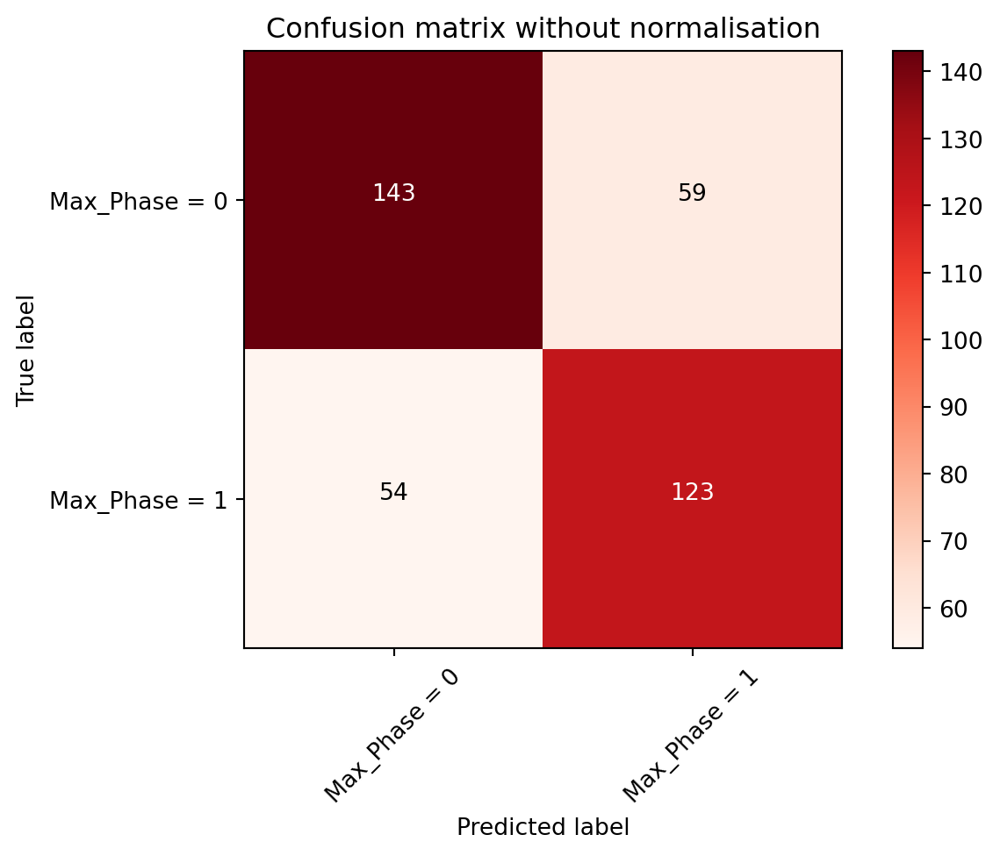

# To install Polars dataframe library
# Uncomment below to download and install Polars
#!pip install polars
# Update Polars version
# Uncomment the line below to update Polars
#!pip install --upgrade polarsMachine learning in drug discovery - series 1.1
Latest update from 19th April 2024 - Polars is currently more integrated with Scikit-learn from version 1.4 (since January 2024), see this link re. Polars output in set_output for Polars dataframe outputs in Scikit-learn, and also a few other Polars enhancements from release version 1.4 changelog. I may attempt to update this series of posts in the future as they most probably won’t need the conversion from Polars to Pandas dataframes anymore.
Previous post update was on 16th August 2023 - some code updates only, please always refer to Polars API reference documentations for most up-to-date code.
Background
As my interests gradually grew for Rust, I realised why so many people said it might be a hard programming language to learn. My head was spinning after reading the Rust programming language book and watching a few online teaching videos about it. I then decided to start from something I was more familiar with, and somehow through various online ventures and searching, I’ve managed to start two projects in parallel. The first one was where I used Polars dataframe library, and the second one would be about using Rust through an interactive user interface such as Jupyter notebook. I’ve anticipated that the second project would take much longer time for me to finish, so I would be tackling the first project for now.
This project was about using Polars, a blazingly fast dataframe library that was written completely in Rust with a very light Python binding that was available for use via Python or Rust, so I started using Polars via Python on Jupyter Lab initially, which involved data wrangling, some exploratory data analysis (EDA), and a reasonably larger section on using machine learning (ML) through scikit-learn. The editing and publishing of this post was mainly achieved via RStudio IDE.
Install Polars
Once Polars was installed, the next step was to import it for use.
import polars as pl# Show version of Polars
# Uncomment line below to check version of Polars installed/updated
#pl.show_versions()Download dataset
The dataset, which was purely about small molecules and their physicochemical properties, was downloaded from ChEMBL database and saved as a .csv file. I’ve decided not to upload the “chembl_mols.csv” file due to its sheer size (around 0.6 GB), and also I’d like to stay using free open-source resources (including GitHub) at this stage. I’ve looked into the Git large file system, but for the free version it only provides 2 GB, which at this stage, I think by adding this larger than usual .csv file along with my portfolio blog repository may exceed this limit in no time.
For anyone who would like to use the same dataset, the file I used would be equivalent to a straight download from the home page of ChEMBL database, via clicking on the “Distinct compounds” (please see the circled area in the image below). Options were available to download the files as .csv, .tsv or .sdf formats (located at the top right of the page).

Once we’ve had the file ready, it would be read via the usual read_csv() method.
df = pl.read_csv("chembl_mols.csv")
df.head() #read first 5 rows
#df #read full dataset
shape: (5, 1)
| ChEMBL ID";"Name";"Synonyms";"Type";"Max Phase";"Molecular Weight";"Targets";"Bioactivities";"AlogP";"Polar Surface Area";"HBA";"HBD";"#RO5 Violations";"#Rotatable Bonds";"Passes Ro3";"QED Weighted";"CX Acidic pKa";"CX Basic pKa";"CX LogP";"CX LogD";"Aromatic Rings";"Structure Type";"Inorganic Flag";"Heavy Atoms";"HBA (Lipinski)";"HBD (Lipinski)";"#RO5 Violations (Lipinski)";"Molecular Weight (Monoisotopic)";"Molecular Species";"Molecular Formula";"Smiles";"Inchi Key |
|---|
| str |
| "CHEMBL1206185;… |
| "CHEMBL539070;"… |
| "CHEMBL3335528;… |
| "CHEMBL2419030;… |
| "CHEMBL4301448;… |
Data wrangling
Now, since this dataset was downloaded as a .csv file, this meant it was likely to have a certain delimiter between each variable. So the whole dataset was presented as strings where each string represented each compound in each row. Each variable was separated by semicolons. To read it properly, I’ve added a delimiter term in the code to transform the dataframe into a more readable format.
# By referring to Polars documentation,
# *use "sep" to set the delimiter of the file
# which was semicolons in this case
# *please note this has been updated to "separator"
# due to updates in Polars since the published date of this post
df = pl.read_csv("chembl_mols.csv", separator = ";")
# Show the first 10 rows of data
#df.head(10)
# or full dataset
df
shape: (2_331_700, 32)
| ChEMBL ID | Name | Synonyms | Type | Max Phase | Molecular Weight | Targets | Bioactivities | AlogP | Polar Surface Area | HBA | HBD | #RO5 Violations | #Rotatable Bonds | Passes Ro3 | QED Weighted | CX Acidic pKa | CX Basic pKa | CX LogP | CX LogD | Aromatic Rings | Structure Type | Inorganic Flag | Heavy Atoms | HBA (Lipinski) | HBD (Lipinski) | #RO5 Violations (Lipinski) | Molecular Weight (Monoisotopic) | Molecular Species | Molecular Formula | Smiles | Inchi Key |
|---|---|---|---|---|---|---|---|---|---|---|---|---|---|---|---|---|---|---|---|---|---|---|---|---|---|---|---|---|---|---|---|
| str | str | str | str | i64 | str | str | str | str | str | str | str | str | str | str | str | str | str | str | str | str | str | i64 | str | str | str | str | str | str | str | str | str |
| "CHEMBL1206185" | "" | "" | "Small molecule… | 0 | "607.88" | "" | "" | "9.46" | "89.62" | "5" | "2" | "2" | "17" | "N" | "0.09" | "-1.91" | "8.38" | "9.40" | "9.36" | "3" | "MOL" | -1 | "42" | "5" | "3" | "2" | "607.2790" | "ACID" | "C35H45NO4S2" | "CCCCCCCCCCC#CC… | "UFBLKYIDZFRLPR… |
| "CHEMBL539070" | "" | "" | "Small molecule… | 0 | "286.79" | "1" | "1" | "2.28" | "73.06" | "6" | "2" | "0" | "5" | "N" | "0.63" | "13.84" | "3.64" | "2.57" | "2.57" | "2" | "MOL" | -1 | "17" | "5" | "3" | "0" | "250.0888" | "NEUTRAL" | "C11H15ClN4OS" | "CCCOc1ccccc1-c… | "WPEWNRKLKLNLSO… |
| "CHEMBL3335528" | "" | "" | "Small molecule… | 0 | "842.80" | "2" | "6" | "0.18" | "269.57" | "18" | "5" | "2" | "17" | "N" | "0.09" | "3.20" | "None" | "3.31" | "-0.14" | "3" | "MOL" | -1 | "60" | "19" | "5" | "2" | "842.2633" | "ACID" | "C41H46O19" | "COC(=O)[C@H](O… | "KGUJQZWYZPYYRZ… |
| "CHEMBL2419030" | "" | "" | "Small molecule… | 0 | "359.33" | "4" | "4" | "3.94" | "85.13" | "6" | "1" | "0" | "3" | "N" | "0.66" | "None" | "None" | "3.66" | "3.66" | "2" | "MOL" | -1 | "24" | "6" | "1" | "0" | "359.0551" | "NEUTRAL" | "C14H12F3N3O3S" | "O=c1nc(NC2CCCC… | "QGDMYSDFCXOKML… |
| "CHEMBL4301448" | "" | "" | "Small molecule… | 0 | "465.55" | "" | "" | "5.09" | "105.28" | "6" | "4" | "1" | "10" | "N" | "0.15" | "None" | "12.14" | "4.41" | "2.00" | "4" | "MOL" | -1 | "33" | "7" | "5" | "1" | "465.1635" | "BASE" | "C24H24FN5O2S" | "N=C(N)NCCCOc1c… | "RXTJPHLPHOZLFS… |
| "CHEMBL3827271" | "" | "" | "Small molecule… | 0 | "712.85" | "1" | "1" | "-2.84" | "319.06" | "10" | "11" | "2" | "16" | "N" | "0.07" | "4.08" | "10.49" | "-6.88" | "-8.95" | "0" | "MOL" | -1 | "50" | "19" | "14" | "3" | "712.4232" | "ZWITTERION" | "C31H56N10O9" | "CC(C)C[C@@H]1N… | "QJQNNLICZLLPMB… |
| "CHEMBL1969944" | "" | "" | "Small molecule… | 0 | "" | "56" | "56" | "" | "" | "" | "" | "" | "" | "" | "" | "" | "" | "" | "" | "" | "NONE" | -1 | "" | "" | "" | "" | "" | "" | "" | "" | "" |
| "CHEMBL3465961" | "" | "" | "Small molecule… | 0 | "319.42" | "16" | "22" | "2.22" | "50.50" | "4" | "1" | "0" | "6" | "N" | "0.87" | "None" | "9.38" | "2.13" | "-0.44" | "1" | "MOL" | -1 | "23" | "4" | "1" | "0" | "319.2060" | "BASE" | "C18H26FN3O" | "CC(O)CN1CCC(CN… | "FZEVYCHTADTXPM… |
| "CHEMBL587495" | "" | "" | "Small molecule… | 0 | "478.54" | "" | "" | "6.85" | "66.73" | "4" | "3" | "1" | "6" | "N" | "0.23" | "10.67" | "8.47" | "6.04" | "4.93" | "5" | "MOL" | -1 | "34" | "4" | "4" | "1" | "478.1439" | "NEUTRAL" | "C26H21F3N4S" | "Nc1cccc(CNCc2c… | "KZOHKPSNJBXTRJ… |
| "CHEMBL3824158" | "" | "" | "Small molecule… | 0 | "422.48" | "2" | "4" | "5.09" | "109.54" | "6" | "2" | "1" | "10" | "N" | "0.31" | "4.59" | "7.99" | "2.49" | "2.42" | "2" | "MOL" | -1 | "31" | "7" | "2" | "1" | "422.1842" | "ACID" | "C24H26N2O5" | "CCCCCCCNC(C1=C… | "AXOVDUYYBUYLPC… |
| "CHEMBL194112" | "" | "" | "Small molecule… | 0 | "366.38" | "2" | "3" | "4.80" | "57.53" | "3" | "2" | "0" | "1" | "N" | "0.75" | "8.98" | "None" | "4.84" | "4.83" | "1" | "MOL" | -1 | "26" | "3" | "2" | "0" | "366.1443" | "NEUTRAL" | "C20H21F3O3" | "C[C@]12CCC3c4c… | "FIBOSLUEJGPVMK… |
| "CHEMBL2047226" | "" | "" | "Small molecule… | 0 | "452.40" | "4" | "8" | "4.93" | "53.08" | "5" | "2" | "0" | "7" | "N" | "0.53" | "None" | "8.47" | "4.51" | "3.29" | "3" | "MOL" | -1 | "29" | "5" | "2" | "0" | "451.1372" | "NEUTRAL" | "C23H26BrN5" | "Brc1ccc(CNc2cc… | "WOAVNWHCIXCOIZ… |
| … | … | … | … | … | … | … | … | … | … | … | … | … | … | … | … | … | … | … | … | … | … | … | … | … | … | … | … | … | … | … | … |
| "CHEMBL387315" | "" | "" | "Small molecule… | 0 | "673.99" | "2" | "2" | "9.83" | "43.86" | "3" | "0" | "2" | "21" | "N" | "0.08" | "None" | "9.57" | "10.60" | "8.45" | "4" | "MOL" | -1 | "50" | "5" | "0" | "2" | "673.4607" | "BASE" | "C45H59N3O2" | "CCCCCc1ccc(C(=… | "HVSKDFHVTFRADD… |
| "CHEMBL540121" | "" | "" | "Small molecule… | 0 | "540.05" | "2" | "3" | "2.39" | "147.14" | "6" | "4" | "1" | "8" | "N" | "0.22" | "5.02" | "11.48" | "-0.75" | "-0.78" | "4" | "MOL" | -1 | "36" | "9" | "5" | "1" | "503.1627" | "ZWITTERION" | "C26H26ClN5O4S" | "Cc1ccn(NS(=O)(… | "TZLGWENJAJXWGA… |
| "CHEMBL2387650" | "" | "" | "Small molecule… | 0 | "496.01" | "2" | "13" | "6.03" | "66.84" | "5" | "1" | "1" | "7" | "N" | "0.32" | "3.57" | "None" | "6.77" | "3.42" | "3" | "MOL" | -1 | "33" | "5" | "1" | "1" | "495.0366" | "ACID" | "C25H18ClNO4S2" | "O=C(O)[C@@H](C… | "LSYQEQADGPAMNF… |
| "CHEMBL374041" | "" | "" | "Small molecule… | 0 | "504.50" | "2" | "4" | "3.04" | "144.95" | "8" | "3" | "1" | "10" | "N" | "0.28" | "6.59" | "4.37" | "2.17" | "1.33" | "3" | "MOL" | -1 | "37" | "11" | "3" | "2" | "504.1645" | "NEUTRAL" | "C26H24N4O7" | "CCOCCC1(Oc2ccc… | "ABCSNHDQYHOLOO… |
| "CHEMBL394794" | "" | "" | "Small molecule… | 0 | "707.86" | "1" | "2" | "4.31" | "183.99" | "12" | "3" | "2" | "9" | "N" | "0.18" | "12.10" | "None" | "3.09" | "3.09" | "0" | "MOL" | -1 | "50" | "13" | "3" | "2" | "707.3881" | "NEUTRAL" | "C37H57NO12" | "C=C1[C@@H](O)C… | "CFMSPOHWBQUTHN… |
| "CHEMBL2035815" | "" | "" | "Small molecule… | 0 | "534.89" | "10" | "10" | "4.46" | "146.01" | "10" | "3" | "1" | "8" | "N" | "0.28" | "None" | "6.22" | "3.48" | "3.48" | "4" | "MOL" | -1 | "37" | "11" | "4" | "2" | "534.1142" | "NEUTRAL" | "C22H18ClF3N8O3… | "C=CC(=O)NCc1co… | "ZRZKVZZVULTROL… |
| "CHEMBL1586325" | "" | "" | "Small molecule… | 0 | "425.47" | "6" | "7" | "3.11" | "109.62" | "5" | "1" | "0" | "8" | "N" | "0.44" | "13.84" | "None" | "3.24" | "3.24" | "3" | "MOL" | -1 | "30" | "8" | "1" | "0" | "425.1045" | "NEUTRAL" | "C21H19N3O5S" | "O=C(CN(c1cccc(… | "XVDMUGUIAWGPNU… |
| "CHEMBL2017916" | "" | "" | "Small molecule… | 0 | "312.35" | "3" | "3" | "2.86" | "77.00" | "6" | "1" | "0" | "4" | "N" | "0.80" | "8.13" | "3.49" | "2.17" | "2.10" | "3" | "MOL" | -1 | "22" | "6" | "1" | "0" | "312.0681" | "NEUTRAL" | "C15H12N4O2S" | "COc1ccc(-c2nnc… | "XIZUJGDKNPVNQA… |
| "CHEMBL374652" | "" | "" | "Small molecule… | 0 | "403.83" | "1" | "1" | "5.98" | "36.02" | "2" | "2" | "1" | "4" | "N" | "0.42" | "13.65" | "None" | "5.36" | "5.36" | "3" | "MOL" | -1 | "26" | "2" | "2" | "1" | "403.0421" | "NEUTRAL" | "C18H14ClF4NOS" | "CC(O)(CSc1ccc(… | "CRPQTBRTHURKII… |
| "CHEMBL1416264" | "" | "" | "Small molecule… | 0 | "380.41" | "6" | "8" | "3.06" | "85.07" | "7" | "1" | "0" | "5" | "N" | "0.54" | "13.85" | "3.86" | "2.47" | "2.47" | "4" | "MOL" | -1 | "27" | "7" | "1" | "0" | "380.0856" | "NEUTRAL" | "C18H13FN6OS" | "O=C(CSc1ccc2nn… | "QVYIEKHEJKFNAT… |
| "CHEMBL213734" | "" | "" | "Small molecule… | 0 | "288.26" | "2" | "3" | "2.32" | "101.70" | "5" | "2" | "0" | "5" | "N" | "0.50" | "7.20" | "None" | "2.36" | "1.95" | "2" | "MOL" | -1 | "21" | "7" | "2" | "0" | "288.0746" | "NEUTRAL" | "C14H12N2O5" | "O=C(COc1ccccc1… | "PZTWAHGBGTWVEB… |
| "CHEMBL1531634" | "" | "" | "Small molecule… | 0 | "320.16" | "19" | "21" | "4.40" | "29.10" | "2" | "1" | "0" | "4" | "N" | "0.67" | "None" | "None" | "4.04" | "4.04" | "2" | "MOL" | -1 | "19" | "2" | "1" | "0" | "319.0008" | "NEUTRAL" | "C15H11BrFNO" | "O=C(/C=C/Nc1cc… | "DKPWCCDDKFLKEC… |
Initially, I only wanted to download around 24 compounds from the ChEMBL database first. Unknowingly, I ended up downloading the whole curated set of 2,331,700 small molecules (!), and I found this out when I loaded the dataframe after setting up the delimiter for the csv file, which later led to the file size problem mentioned earlier.
Loading these 2,331,700 rows of data was fast, which occurred within a few seconds without exaggeration. This echoed many users’ experiences with Polars, so this was another nice surprise, and once again confirmed that Rust, and also Apache arrow, which was used as Polars’ foundation, were solid in speed.
Now I had the full dataframe, and I wanted to find out what types of physicochemical properties were there for the compounds.
# Print all column names and data types
print(df.glimpse())Rows: 2331700
Columns: 32
$ ChEMBL ID <str> 'CHEMBL1206185', 'CHEMBL539070', 'CHEMBL3335528', 'CHEMBL2419030', 'CHEMBL4301448', 'CHEMBL3827271', 'CHEMBL1969944', 'CHEMBL3465961', 'CHEMBL587495', 'CHEMBL3824158'
$ Name <str> '', '', '', '', '', '', '', '', '', ''
$ Synonyms <str> '', '', '', '', '', '', '', '', '', ''
$ Type <str> 'Small molecule', 'Small molecule', 'Small molecule', 'Small molecule', 'Small molecule', 'Small molecule', 'Small molecule', 'Small molecule', 'Small molecule', 'Small molecule'
$ Max Phase <i64> 0, 0, 0, 0, 0, 0, 0, 0, 0, 0
$ Molecular Weight <str> '607.88', '286.79', '842.80', '359.33', '465.55', '712.85', '', '319.42', '478.54', '422.48'
$ Targets <str> '', '1', '2', '4', '', '1', '56', '16', '', '2'
$ Bioactivities <str> '', '1', '6', '4', '', '1', '56', '22', '', '4'
$ AlogP <str> '9.46', '2.28', '0.18', '3.94', '5.09', '-2.84', '', '2.22', '6.85', '5.09'
$ Polar Surface Area <str> '89.62', '73.06', '269.57', '85.13', '105.28', '319.06', '', '50.50', '66.73', '109.54'
$ HBA <str> '5', '6', '18', '6', '6', '10', '', '4', '4', '6'
$ HBD <str> '2', '2', '5', '1', '4', '11', '', '1', '3', '2'
$ #RO5 Violations <str> '2', '0', '2', '0', '1', '2', '', '0', '1', '1'
$ #Rotatable Bonds <str> '17', '5', '17', '3', '10', '16', '', '6', '6', '10'
$ Passes Ro3 <str> 'N', 'N', 'N', 'N', 'N', 'N', '', 'N', 'N', 'N'
$ QED Weighted <str> '0.09', '0.63', '0.09', '0.66', '0.15', '0.07', '', '0.87', '0.23', '0.31'
$ CX Acidic pKa <str> '-1.91', '13.84', '3.20', 'None', 'None', '4.08', '', 'None', '10.67', '4.59'
$ CX Basic pKa <str> '8.38', '3.64', 'None', 'None', '12.14', '10.49', '', '9.38', '8.47', '7.99'
$ CX LogP <str> '9.40', '2.57', '3.31', '3.66', '4.41', '-6.88', '', '2.13', '6.04', '2.49'
$ CX LogD <str> '9.36', '2.57', '-0.14', '3.66', '2.00', '-8.95', '', '-0.44', '4.93', '2.42'
$ Aromatic Rings <str> '3', '2', '3', '2', '4', '0', '', '1', '5', '2'
$ Structure Type <str> 'MOL', 'MOL', 'MOL', 'MOL', 'MOL', 'MOL', 'NONE', 'MOL', 'MOL', 'MOL'
$ Inorganic Flag <i64> -1, -1, -1, -1, -1, -1, -1, -1, -1, -1
$ Heavy Atoms <str> '42', '17', '60', '24', '33', '50', '', '23', '34', '31'
$ HBA (Lipinski) <str> '5', '5', '19', '6', '7', '19', '', '4', '4', '7'
$ HBD (Lipinski) <str> '3', '3', '5', '1', '5', '14', '', '1', '4', '2'
$ #RO5 Violations (Lipinski) <str> '2', '0', '2', '0', '1', '3', '', '0', '1', '1'
$ Molecular Weight (Monoisotopic) <str> '607.2790', '250.0888', '842.2633', '359.0551', '465.1635', '712.4232', '', '319.2060', '478.1439', '422.1842'
$ Molecular Species <str> 'ACID', 'NEUTRAL', 'ACID', 'NEUTRAL', 'BASE', 'ZWITTERION', '', 'BASE', 'NEUTRAL', 'ACID'
$ Molecular Formula <str> 'C35H45NO4S2', 'C11H15ClN4OS', 'C41H46O19', 'C14H12F3N3O3S', 'C24H24FN5O2S', 'C31H56N10O9', '', 'C18H26FN3O', 'C26H21F3N4S', 'C24H26N2O5'
$ Smiles <str> 'CCCCCCCCCCC#CC(N)c1ccccc1-c1ccc(Sc2ccc(OCCCC)cc2)c(S(=O)(=O)O)c1', 'CCCOc1ccccc1-c1nnc(NN)s1.Cl', 'COC(=O)[C@H](O[C@@H]1O[C@@H](C)[C@@H](O)[C@@H](O)[C@@H]1O)[C@@H](O[C@@H]1O[C@H](CO)[C@H](OC(=O)c2ccccc2)[C@H](O[C@H](Cc2ccccc2)C(=O)O)[C@H]1OC(=O)c1ccccc1)C(=O)OC', 'O=c1nc(NC2CCCC2)sc2c([N+](=O)[O-])cc(C(F)(F)F)cc12', 'N=C(N)NCCCOc1ccc(CNc2nc3ccc(Oc4ccc(F)cc4)cc3s2)cc1', 'CC(C)C[C@@H]1NC(=O)[C@H](CCCNC(N)=O)NC(=O)[C@H](CCCCN)NC(=O)[C@H](CC(=O)O)NC(=O)[C@H](CCCCN)NC(=O)CCNC1=O', '', 'CC(O)CN1CCC(CN(C)Cc2cc(C#N)ccc2F)CC1', 'Nc1cccc(CNCc2ccc(-c3ccc(-c4nc5cc(C(F)(F)F)ccc5[nH]4)s3)cc2)c1', 'CCCCCCCNC(C1=C(O)C(=O)c2ccccc2C1=O)c1ccc([N+](=O)[O-])cc1'
$ Inchi Key <str> 'UFBLKYIDZFRLPR-UHFFFAOYSA-N', 'WPEWNRKLKLNLSO-UHFFFAOYSA-N', 'KGUJQZWYZPYYRZ-LWEWUKDVSA-N', 'QGDMYSDFCXOKML-UHFFFAOYSA-N', 'RXTJPHLPHOZLFS-UHFFFAOYSA-N', 'QJQNNLICZLLPMB-VUBDRERZSA-N', '', 'FZEVYCHTADTXPM-UHFFFAOYSA-N', 'KZOHKPSNJBXTRJ-UHFFFAOYSA-N', 'AXOVDUYYBUYLPC-UHFFFAOYSA-N'
NoneThere were a few terms where I wasn’t sure of their exact meanings, so I went through the ChEMBL_31 schema documentation and ChEMBL database website to find out. This took a while and was an important step to take so that I would know what to do when reaching the ML phase.
I have selected a few physicochemical properties down below so that readers and I could gather some reasonable understandings for each term. The explanations for each term were adapted from ChEMBL_31 schema documentation (available as “Release notes” on the website), or if definitions for certain terms were not available from the documentation, I resorted to interpret them myself by going into “Dinstict compounds” section on the ChEMBL database, where I would click on, e.g. bioactivities, for a random compound in there to see what results showed up and then described them below.
The definitions for some of the listed physicochemical properties were:
Max Phase - Maximum phase of development reached for the compound (where 4 = approved). Null was where max phase has not yet been assigned.
Bioactivities - Various biological assays used for the compounds e.g. IC50, GI50, potency tests etc.
AlogP - Calculated partition coefficient
HBA - Number of hydrogen bond acceptors
HBD - Number of hydrogen bond donors
#RO5 Violations - Number of violations of Lipinski’s rule-of-five, using HBA and HBD definitions
Passes Ro3 - Indicated whether the compound passed the rule-of-three (MW < 300, logP < 3 etc)
QED Weighted - Weighted quantitative estimate of drug likeness (as defined by Bickerton et al., Nature Chem 2012)
Inorganic flag - Indicated whether the molecule was inorganic (i.e., containing only metal atoms and <2 carbon atoms), where 1 = inorganic compound and -1 = not inorganic compound (assuming 0 meant it was neither case or yet to be assigned)
Heavy Atoms - Number of heavy (non-hydrogen) atoms
CX Acidic pKa - The most acidic pKa calculated using ChemAxon v17.29.0
CX Basic pKa - The most basic pKa calculated using ChemAxon v17.29.0
CX LogP - The calculated octanol/water partition coefficient using ChemAxon v17.29.0
CX LogD - The calculated octanol/water distribution coefficient at pH = 7.4 using ChemAxon v17.29.0
Structure Type - based on compound_structures table, where SEQ indicated an entry in the protein_therapeutics table instead, NONE indicated an entry in neither tables, e.g. structure unknown
Inchi Key - the IUPAC international chemical identifier key
From the df.glimpse() method previously, there were a lot of columns with the data type of “Utf8”, which meant they were strings. There were only two columns that had “Int64”, which meant they were integers. A lot of these columns were actually storing numbers as strings. So to make my life easier, I went on to convert these data types into the more appropriate ones for selected columns.
# Convert data types for multiple selected columns
# Note: only takes two positional arguments,
# so needed to use [] in code to allow more than two
# Multiple columns all at once - with_columns()
# *Single column - with_column()
# *this only worked at the time of writing the post (around published date),
# this is not going to work currently as Polars has been updated,
# please use with_columns() for single or multiple columns instead*
# Use alias if wanting to keep original data type in column,
# as it adds a new column under an alias name to dataframe
df_new = df.with_columns(
[
(pl.col("Molecular Weight")).cast(pl.Float64, strict = False),
(pl.col("Targets")).cast(pl.Int64, strict = False),
(pl.col("Bioactivities")).cast(pl.Int64, strict = False),
(pl.col("AlogP")).cast(pl.Float64, strict = False),
(pl.col("Polar Surface Area")).cast(pl.Float64, strict = False),
(pl.col("HBA")).cast(pl.Int64, strict = False),
(pl.col("HBD")).cast(pl.Int64, strict = False),
(pl.col("#RO5 Violations")).cast(pl.Int64, strict = False),
(pl.col("#Rotatable Bonds")).cast(pl.Int64, strict = False),
(pl.col("QED Weighted")).cast(pl.Float64, strict = False),
(pl.col("CX Acidic pKa")).cast(pl.Float64, strict = False),
(pl.col("CX Basic pKa")).cast(pl.Float64, strict = False),
(pl.col("CX LogP")).cast(pl.Float64, strict = False),
(pl.col("CX LogD")).cast(pl.Float64, strict = False),
(pl.col("Aromatic Rings")).cast(pl.Int64, strict = False),
(pl.col("Heavy Atoms")).cast(pl.Int64, strict = False),
(pl.col("HBA (Lipinski)")).cast(pl.Int64, strict = False),
(pl.col("HBD (Lipinski)")).cast(pl.Int64, strict = False),
(pl.col("#RO5 Violations (Lipinski)")).cast(pl.Int64, strict = False),
(pl.col("Molecular Weight (Monoisotopic)")).cast(pl.Float64, strict = False)
]
)
df_new.head()
shape: (5, 32)
| ChEMBL ID | Name | Synonyms | Type | Max Phase | Molecular Weight | Targets | Bioactivities | AlogP | Polar Surface Area | HBA | HBD | #RO5 Violations | #Rotatable Bonds | Passes Ro3 | QED Weighted | CX Acidic pKa | CX Basic pKa | CX LogP | CX LogD | Aromatic Rings | Structure Type | Inorganic Flag | Heavy Atoms | HBA (Lipinski) | HBD (Lipinski) | #RO5 Violations (Lipinski) | Molecular Weight (Monoisotopic) | Molecular Species | Molecular Formula | Smiles | Inchi Key |
|---|---|---|---|---|---|---|---|---|---|---|---|---|---|---|---|---|---|---|---|---|---|---|---|---|---|---|---|---|---|---|---|
| str | str | str | str | i64 | f64 | i64 | i64 | f64 | f64 | i64 | i64 | i64 | i64 | str | f64 | f64 | f64 | f64 | f64 | i64 | str | i64 | i64 | i64 | i64 | i64 | f64 | str | str | str | str |
| "CHEMBL1206185" | "" | "" | "Small molecule… | 0 | 607.88 | null | null | 9.46 | 89.62 | 5 | 2 | 2 | 17 | "N" | 0.09 | -1.91 | 8.38 | 9.4 | 9.36 | 3 | "MOL" | -1 | 42 | 5 | 3 | 2 | 607.279 | "ACID" | "C35H45NO4S2" | "CCCCCCCCCCC#CC… | "UFBLKYIDZFRLPR… |
| "CHEMBL539070" | "" | "" | "Small molecule… | 0 | 286.79 | 1 | 1 | 2.28 | 73.06 | 6 | 2 | 0 | 5 | "N" | 0.63 | 13.84 | 3.64 | 2.57 | 2.57 | 2 | "MOL" | -1 | 17 | 5 | 3 | 0 | 250.0888 | "NEUTRAL" | "C11H15ClN4OS" | "CCCOc1ccccc1-c… | "WPEWNRKLKLNLSO… |
| "CHEMBL3335528" | "" | "" | "Small molecule… | 0 | 842.8 | 2 | 6 | 0.18 | 269.57 | 18 | 5 | 2 | 17 | "N" | 0.09 | 3.2 | null | 3.31 | -0.14 | 3 | "MOL" | -1 | 60 | 19 | 5 | 2 | 842.2633 | "ACID" | "C41H46O19" | "COC(=O)[C@H](O… | "KGUJQZWYZPYYRZ… |
| "CHEMBL2419030" | "" | "" | "Small molecule… | 0 | 359.33 | 4 | 4 | 3.94 | 85.13 | 6 | 1 | 0 | 3 | "N" | 0.66 | null | null | 3.66 | 3.66 | 2 | "MOL" | -1 | 24 | 6 | 1 | 0 | 359.0551 | "NEUTRAL" | "C14H12F3N3O3S" | "O=c1nc(NC2CCCC… | "QGDMYSDFCXOKML… |
| "CHEMBL4301448" | "" | "" | "Small molecule… | 0 | 465.55 | null | null | 5.09 | 105.28 | 6 | 4 | 1 | 10 | "N" | 0.15 | null | 12.14 | 4.41 | 2.0 | 4 | "MOL" | -1 | 33 | 7 | 5 | 1 | 465.1635 | "BASE" | "C24H24FN5O2S" | "N=C(N)NCCCOc1c… | "RXTJPHLPHOZLFS… |
Once all the columns’ data types have been checked and converted to appropriate types accordingly, I used null_count() to see the distributions of all null entries in the dataset.
# Check for any null or NA or "" entries in the dataset
# Alternative code that worked similarly was df.select(pl.all().null_count())
df_new.null_count()
shape: (1, 32)
| ChEMBL ID | Name | Synonyms | Type | Max Phase | Molecular Weight | Targets | Bioactivities | AlogP | Polar Surface Area | HBA | HBD | #RO5 Violations | #Rotatable Bonds | Passes Ro3 | QED Weighted | CX Acidic pKa | CX Basic pKa | CX LogP | CX LogD | Aromatic Rings | Structure Type | Inorganic Flag | Heavy Atoms | HBA (Lipinski) | HBD (Lipinski) | #RO5 Violations (Lipinski) | Molecular Weight (Monoisotopic) | Molecular Species | Molecular Formula | Smiles | Inchi Key |
|---|---|---|---|---|---|---|---|---|---|---|---|---|---|---|---|---|---|---|---|---|---|---|---|---|---|---|---|---|---|---|---|
| u32 | u32 | u32 | u32 | u32 | u32 | u32 | u32 | u32 | u32 | u32 | u32 | u32 | u32 | u32 | u32 | u32 | u32 | u32 | u32 | u32 | u32 | u32 | u32 | u32 | u32 | u32 | u32 | u32 | u32 | u32 | u32 |
| 0 | 0 | 0 | 0 | 0 | 23249 | 96223 | 96223 | 83571 | 83571 | 83571 | 83571 | 83571 | 83571 | 0 | 83571 | 1052439 | 882168 | 83795 | 83795 | 83571 | 0 | 0 | 83571 | 83571 | 83571 | 83571 | 23252 | 0 | 0 | 0 | 0 |
# Drop rows with null entries
df_dn = df_new.drop_nulls()
df_dn
# Number of rows reduced to 736,570
shape: (736_570, 32)
| ChEMBL ID | Name | Synonyms | Type | Max Phase | Molecular Weight | Targets | Bioactivities | AlogP | Polar Surface Area | HBA | HBD | #RO5 Violations | #Rotatable Bonds | Passes Ro3 | QED Weighted | CX Acidic pKa | CX Basic pKa | CX LogP | CX LogD | Aromatic Rings | Structure Type | Inorganic Flag | Heavy Atoms | HBA (Lipinski) | HBD (Lipinski) | #RO5 Violations (Lipinski) | Molecular Weight (Monoisotopic) | Molecular Species | Molecular Formula | Smiles | Inchi Key |
|---|---|---|---|---|---|---|---|---|---|---|---|---|---|---|---|---|---|---|---|---|---|---|---|---|---|---|---|---|---|---|---|
| str | str | str | str | i64 | f64 | i64 | i64 | f64 | f64 | i64 | i64 | i64 | i64 | str | f64 | f64 | f64 | f64 | f64 | i64 | str | i64 | i64 | i64 | i64 | i64 | f64 | str | str | str | str |
| "CHEMBL539070" | "" | "" | "Small molecule… | 0 | 286.79 | 1 | 1 | 2.28 | 73.06 | 6 | 2 | 0 | 5 | "N" | 0.63 | 13.84 | 3.64 | 2.57 | 2.57 | 2 | "MOL" | -1 | 17 | 5 | 3 | 0 | 250.0888 | "NEUTRAL" | "C11H15ClN4OS" | "CCCOc1ccccc1-c… | "WPEWNRKLKLNLSO… |
| "CHEMBL3827271" | "" | "" | "Small molecule… | 0 | 712.85 | 1 | 1 | -2.84 | 319.06 | 10 | 11 | 2 | 16 | "N" | 0.07 | 4.08 | 10.49 | -6.88 | -8.95 | 0 | "MOL" | -1 | 50 | 19 | 14 | 3 | 712.4232 | "ZWITTERION" | "C31H56N10O9" | "CC(C)C[C@@H]1N… | "QJQNNLICZLLPMB… |
| "CHEMBL3824158" | "" | "" | "Small molecule… | 0 | 422.48 | 2 | 4 | 5.09 | 109.54 | 6 | 2 | 1 | 10 | "N" | 0.31 | 4.59 | 7.99 | 2.49 | 2.42 | 2 | "MOL" | -1 | 31 | 7 | 2 | 1 | 422.1842 | "ACID" | "C24H26N2O5" | "CCCCCCCNC(C1=C… | "AXOVDUYYBUYLPC… |
| "CHEMBL1991010" | "" | "" | "Small molecule… | 0 | 454.05 | 60 | 60 | 5.18 | 40.54 | 3 | 1 | 1 | 8 | "N" | 0.6 | 13.88 | 8.48 | 6.34 | 5.22 | 2 | "MOL" | -1 | 31 | 3 | 1 | 1 | 417.2668 | "NEUTRAL" | "C28H36ClNO2" | "CCc1ccc(/C=C/C… | "XJDPAUYFONOZBC… |
| "CHEMBL195644" | "" | "" | "Small molecule… | 0 | 375.47 | 2 | 3 | 4.95 | 70.42 | 4 | 2 | 0 | 2 | "N" | 0.73 | 9.52 | 3.73 | 3.92 | 3.91 | 2 | "MOL" | -1 | 28 | 4 | 2 | 0 | 375.1834 | "NEUTRAL" | "C24H25NO3" | "C[C@]12CCC3c4c… | "MOBPUUUBXAHZBM… |
| "CHEMBL255263" | "" | "" | "Small molecule… | 0 | 388.42 | 4 | 4 | 2.42 | 95.16 | 4 | 2 | 0 | 4 | "N" | 0.72 | 11.24 | 1.02 | 1.74 | 1.74 | 3 | "MOL" | -1 | 27 | 7 | 2 | 0 | 388.1005 | "NEUTRAL" | "C18H17FN4O3S" | "O=C(Cc1ccc(F)c… | "JXSGQHRSUUOSAF… |
| "CHEMBL504846" | "" | "25-Deacetyl-Ri… | "Small molecule… | 0 | 807.0 | 3 | 21 | 3.9 | 202.64 | 13 | 7 | 3 | 3 | "N" | 0.23 | 8.61 | 8.27 | 3.4 | 2.87 | 1 | "MOL" | -1 | 58 | 14 | 7 | 3 | 806.4466 | "NEUTRAL" | "C44H62N4O10" | "CO[C@H]1/C=C/O… | "MVUYPJALSSDCQB… |
| "CHEMBL85010" | "" | "" | "Small molecule… | 0 | 508.96 | 4 | 5 | 2.65 | 139.21 | 9 | 3 | 1 | 7 | "N" | 0.22 | 7.03 | 2.71 | 3.27 | 2.75 | 1 | "MOL" | -1 | 35 | 10 | 3 | 1 | 508.1612 | "NEUTRAL" | "C24H29ClN2O8" | "CCOCCNC(=O)CO/… | "PHPBXALSGRFDIK… |
| "CHEMBL1364151" | "" | "" | "Small molecule… | 0 | 314.39 | 5 | 6 | 2.5 | 54.56 | 4 | 1 | 0 | 3 | "N" | 0.88 | 13.45 | 7.28 | 2.38 | 2.14 | 2 | "MOL" | -1 | 23 | 5 | 1 | 0 | 314.163 | "NEUTRAL" | "C18H22N2O3" | "Cc1[nH]c2ccccc… | "OKIWVYPITFJCJI… |
| "CHEMBL2047203" | "" | "" | "Small molecule… | 0 | 855.36 | 5 | 6 | 7.45 | 272.16 | 10 | 4 | 2 | 13 | "N" | 0.06 | -10.58 | 5.78 | 4.35 | 4.11 | 4 | "MOL" | -1 | 61 | 20 | 4 | 3 | 854.3492 | "ACID" | "C40H47ClN14O6" | "COC(=O)N[C@H](… | "QDXJQBSKIKHCKU… |
| "CHEMBL3798157" | "" | "" | "Small molecule… | 0 | 455.45 | 28 | 64 | 4.77 | 105.24 | 6 | 3 | 0 | 5 | "N" | 0.4 | 7.29 | 3.02 | 3.97 | 3.64 | 4 | "MOL" | -1 | 32 | 8 | 3 | 0 | 455.0864 | "NEUTRAL" | "C21H15F2N5O3S" | "CNC(=O)c1cc(Oc… | "LADWERPDOVRXBZ… |
| "CHEMBL1337107" | "" | "" | "Small molecule… | 0 | 296.33 | 2 | 2 | 2.29 | 64.35 | 5 | 1 | 0 | 4 | "N" | 0.75 | 12.82 | 4.35 | 2.35 | 2.35 | 3 | "MOL" | -1 | 22 | 5 | 1 | 0 | 296.1161 | "NEUTRAL" | "C17H16N2O3" | "COC(=O)Cn1c(C(… | "SBCXFZQMSVPTPA… |
| … | … | … | … | … | … | … | … | … | … | … | … | … | … | … | … | … | … | … | … | … | … | … | … | … | … | … | … | … | … | … | … |
| "CHEMBL255122" | "" | "" | "Small molecule… | 0 | 529.07 | 1 | 2 | 2.81 | 110.43 | 6 | 3 | 1 | 5 | "N" | 0.47 | 12.29 | 6.33 | 1.68 | 1.65 | 3 | "MOL" | -1 | 36 | 9 | 3 | 1 | 528.171 | "NEUTRAL" | "C25H29ClN6O3S" | "CCC(=O)N1CCC(N… | "RAMXCQDJYLSGRA… |
| "CHEMBL2018776" | "" | "" | "Small molecule… | 0 | 516.04 | 5 | 5 | 6.1 | 97.84 | 8 | 2 | 2 | 13 | "N" | 0.26 | 12.76 | 9.18 | 5.66 | 3.88 | 3 | "MOL" | -1 | 36 | 9 | 2 | 2 | 515.2299 | "BASE" | "C26H34ClN5O4" | "CCCCOc1cc2c(Nc… | "FARPVPMCEBTTDI… |
| "CHEMBL97207" | "" | "" | "Small molecule… | 0 | 286.12 | 2 | 2 | 1.31 | 99.82 | 5 | 2 | 0 | 3 | "N" | 0.89 | 13.08 | 0.38 | 2.1 | 2.1 | 2 | "MOL" | -1 | 18 | 6 | 4 | 0 | 285.0184 | "NEUTRAL" | "C10H9Cl2N5O" | "NC(=O)c1nnn(Cc… | "HULYRQSWFVUVSF… |
| "CHEMBL221343" | "" | "LUF-5980" | "Small molecule… | 0 | 313.4 | 5 | 7 | 5.42 | 41.57 | 2 | 1 | 1 | 3 | "N" | 0.55 | 11.75 | 3.12 | 5.46 | 5.46 | 4 | "MOL" | -1 | 24 | 3 | 1 | 1 | 313.1579 | "NEUTRAL" | "C21H19N3" | "CC(C)c1nc2c(-c… | "REXYMDQLBZWOMA… |
| "CHEMBL1420018" | "" | "" | "Small molecule… | 0 | 255.27 | 15 | 20 | 2.31 | 69.39 | 4 | 1 | 0 | 4 | "N" | 0.52 | 13.72 | 2.76 | 2.38 | 2.38 | 2 | "MOL" | -1 | 19 | 4 | 2 | 0 | 255.0895 | "NEUTRAL" | "C15H13NO3" | "Nc1cccc(C(=O)O… | "UTIDKUVFKVXYLT… |
| "CHEMBL2314244" | "" | "" | "Small molecule… | 0 | 470.61 | 7 | 9 | 1.86 | 122.72 | 6 | 6 | 1 | 17 | "N" | 0.2 | 8.96 | 10.81 | -0.72 | -3.93 | 2 | "MOL" | -1 | 34 | 8 | 6 | 1 | 470.2893 | "BASE" | "C26H38N4O4" | "O=C(Cc1ccccc1O… | "SUKXUTUXGGJIBX… |
| "CHEMBL1420130" | "" | "" | "Small molecule… | 0 | 226.3 | 2 | 2 | 1.89 | 63.08 | 5 | 1 | 0 | 3 | "N" | 0.63 | 12.05 | 1.31 | 2.94 | 2.94 | 1 | "MOL" | -1 | 15 | 4 | 1 | 0 | 226.0776 | "NEUTRAL" | "C10H14N2O2S" | "CC(C)(C)C(=O)C… | "LCGAKQAOOABKRG… |
| "CHEMBL2419480" | "" | "" | "Small molecule… | 0 | 456.52 | 3 | 3 | 1.56 | 129.46 | 8 | 1 | 0 | 8 | "N" | 0.59 | 3.99 | 1.9 | 2.14 | 1.2 | 2 | "MOL" | -1 | 32 | 9 | 1 | 0 | 456.1467 | "ACID" | "C22H24N4O5S" | "CCOC(=O)c1cc(C… | "TXYSLOQUANFYQS… |
| "CHEMBL540121" | "" | "" | "Small molecule… | 0 | 540.05 | 2 | 3 | 2.39 | 147.14 | 6 | 4 | 1 | 8 | "N" | 0.22 | 5.02 | 11.48 | -0.75 | -0.78 | 4 | "MOL" | -1 | 36 | 9 | 5 | 1 | 503.1627 | "ZWITTERION" | "C26H26ClN5O4S" | "Cc1ccn(NS(=O)(… | "TZLGWENJAJXWGA… |
| "CHEMBL374041" | "" | "" | "Small molecule… | 0 | 504.5 | 2 | 4 | 3.04 | 144.95 | 8 | 3 | 1 | 10 | "N" | 0.28 | 6.59 | 4.37 | 2.17 | 1.33 | 3 | "MOL" | -1 | 37 | 11 | 3 | 2 | 504.1645 | "NEUTRAL" | "C26H24N4O7" | "CCOCCC1(Oc2ccc… | "ABCSNHDQYHOLOO… |
| "CHEMBL2017916" | "" | "" | "Small molecule… | 0 | 312.35 | 3 | 3 | 2.86 | 77.0 | 6 | 1 | 0 | 4 | "N" | 0.8 | 8.13 | 3.49 | 2.17 | 2.1 | 3 | "MOL" | -1 | 22 | 6 | 1 | 0 | 312.0681 | "NEUTRAL" | "C15H12N4O2S" | "COc1ccc(-c2nnc… | "XIZUJGDKNPVNQA… |
| "CHEMBL1416264" | "" | "" | "Small molecule… | 0 | 380.41 | 6 | 8 | 3.06 | 85.07 | 7 | 1 | 0 | 5 | "N" | 0.54 | 13.85 | 3.86 | 2.47 | 2.47 | 4 | "MOL" | -1 | 27 | 7 | 1 | 0 | 380.0856 | "NEUTRAL" | "C18H13FN6OS" | "O=C(CSc1ccc2nn… | "QVYIEKHEJKFNAT… |
# Check that all rows with null values were dropped
df_dn.null_count()
shape: (1, 32)
| ChEMBL ID | Name | Synonyms | Type | Max Phase | Molecular Weight | Targets | Bioactivities | AlogP | Polar Surface Area | HBA | HBD | #RO5 Violations | #Rotatable Bonds | Passes Ro3 | QED Weighted | CX Acidic pKa | CX Basic pKa | CX LogP | CX LogD | Aromatic Rings | Structure Type | Inorganic Flag | Heavy Atoms | HBA (Lipinski) | HBD (Lipinski) | #RO5 Violations (Lipinski) | Molecular Weight (Monoisotopic) | Molecular Species | Molecular Formula | Smiles | Inchi Key |
|---|---|---|---|---|---|---|---|---|---|---|---|---|---|---|---|---|---|---|---|---|---|---|---|---|---|---|---|---|---|---|---|
| u32 | u32 | u32 | u32 | u32 | u32 | u32 | u32 | u32 | u32 | u32 | u32 | u32 | u32 | u32 | u32 | u32 | u32 | u32 | u32 | u32 | u32 | u32 | u32 | u32 | u32 | u32 | u32 | u32 | u32 | u32 | u32 |
| 0 | 0 | 0 | 0 | 0 | 0 | 0 | 0 | 0 | 0 | 0 | 0 | 0 | 0 | 0 | 0 | 0 | 0 | 0 | 0 | 0 | 0 | 0 | 0 | 0 | 0 | 0 | 0 | 0 | 0 | 0 | 0 |
# To see summary statistics for df_dn dataset
df_dn.describe()
shape: (9, 33)
| statistic | ChEMBL ID | Name | Synonyms | Type | Max Phase | Molecular Weight | Targets | Bioactivities | AlogP | Polar Surface Area | HBA | HBD | #RO5 Violations | #Rotatable Bonds | Passes Ro3 | QED Weighted | CX Acidic pKa | CX Basic pKa | CX LogP | CX LogD | Aromatic Rings | Structure Type | Inorganic Flag | Heavy Atoms | HBA (Lipinski) | HBD (Lipinski) | #RO5 Violations (Lipinski) | Molecular Weight (Monoisotopic) | Molecular Species | Molecular Formula | Smiles | Inchi Key |
|---|---|---|---|---|---|---|---|---|---|---|---|---|---|---|---|---|---|---|---|---|---|---|---|---|---|---|---|---|---|---|---|---|
| str | str | str | str | str | f64 | f64 | f64 | f64 | f64 | f64 | f64 | f64 | f64 | f64 | str | f64 | f64 | f64 | f64 | f64 | f64 | str | f64 | f64 | f64 | f64 | f64 | f64 | str | str | str | str |
| "count" | "736570" | "736570" | "736570" | "736570" | 736570.0 | 736570.0 | 736570.0 | 736570.0 | 736570.0 | 736570.0 | 736570.0 | 736570.0 | 736570.0 | 736570.0 | "736570" | 736570.0 | 736570.0 | 736570.0 | 736570.0 | 736570.0 | 736570.0 | "736570" | 736570.0 | 736570.0 | 736570.0 | 736570.0 | 736570.0 | 736570.0 | "736570" | "736570" | "736570" | "736570" |
| "null_count" | "0" | "0" | "0" | "0" | 0.0 | 0.0 | 0.0 | 0.0 | 0.0 | 0.0 | 0.0 | 0.0 | 0.0 | 0.0 | "0" | 0.0 | 0.0 | 0.0 | 0.0 | 0.0 | 0.0 | "0" | 0.0 | 0.0 | 0.0 | 0.0 | 0.0 | 0.0 | "0" | "0" | "0" | "0" |
| "mean" | null | null | null | null | 0.007937 | 431.880042 | 5.520715 | 8.705471 | 3.325204 | 97.58116 | 5.890221 | 2.274721 | 0.489124 | 6.216262 | null | 0.510936 | 9.59944 | 5.074377 | 2.815115 | 2.17363 | 2.754412 | null | -0.929521 | 30.266113 | 7.276555 | 2.497847 | 0.576319 | 428.334452 | null | null | null | null |
| "std" | null | null | null | null | 0.164565 | 135.637543 | 14.784793 | 55.537836 | 1.980414 | 47.40847 | 2.459106 | 1.681943 | 0.794171 | 3.894505 | null | 0.229039 | 3.583639 | 3.234099 | 2.286325 | 2.645694 | 1.2009 | null | 0.255953 | 9.54406 | 3.067158 | 2.081485 | 0.908719 | 133.755653 | null | null | null | null |
| "min" | "CHEMBL10" | "" | "" | "" | 0.0 | 45.04 | 1.0 | 1.0 | -12.92 | 3.24 | 1.0 | 0.0 | 0.0 | 0.0 | "N" | 0.01 | -20.03 | 0.0 | -16.71 | -26.04 | 0.0 | "BOTH" | -1.0 | 3.0 | 1.0 | 0.0 | 0.0 | 45.0215 | "ACID" | "C10H10Br2N2O" | "Br.Br.C/C(=N/N… | "AAAADVYFXUUVEO… |
| "25%" | null | null | null | null | 0.0 | 340.47 | 1.0 | 2.0 | 2.21 | 68.29 | 4.0 | 1.0 | 0.0 | 4.0 | null | 0.34 | 7.69 | 2.25 | 1.64 | 0.97 | 2.0 | null | -1.0 | 24.0 | 5.0 | 1.0 | 0.0 | 339.0582 | null | null | null | null |
| "50%" | null | null | null | null | 0.0 | 413.46 | 2.0 | 3.0 | 3.37 | 88.32 | 5.0 | 2.0 | 0.0 | 5.0 | null | 0.51 | 10.51 | 4.7 | 2.97 | 2.46 | 3.0 | null | -1.0 | 29.0 | 7.0 | 2.0 | 0.0 | 410.2066 | null | null | null | null |
| "75%" | null | null | null | null | 0.0 | 494.57 | 5.0 | 8.0 | 4.53 | 113.23 | 7.0 | 3.0 | 1.0 | 8.0 | null | 0.7 | 12.45 | 7.85 | 4.23 | 3.79 | 4.0 | null | -1.0 | 35.0 | 9.0 | 3.0 | 1.0 | 491.0028 | null | null | null | null |
| "max" | "CHEMBL99998" | "t-4-AMINOCROTO… | "trovafloxacin9… | "Unknown" | 4.0 | 1901.51 | 1334.0 | 17911.0 | 16.83 | 595.22 | 32.0 | 25.0 | 4.0 | 59.0 | "Y" | 0.95 | 14.0 | 38.8 | 18.31 | 18.31 | 28.0 | "MOL" | 0.0 | 76.0 | 34.0 | 32.0 | 4.0 | 999.4063 | "ZWITTERION" | "HNNa2O8S2" | "n1nc2c([nH]1)c… | "ZZZZEJJXQQRZBH… |
Some exploratory data analysis
One of the columns that jumped out from the summary statistics of the df_dn dataset was the “Targets” column. It ranged from 1 to 1334 targets. Out of curiosity, I went through several places on ChEMBL website to find out the exact definition of “Target”. Eventually I settled on an answer which explained that the “Target” column represented the number of targets associated with the particular ChEMBL compound listed. I then singled out the ChEMBL compound with 1334 targets recorded, it turned out to be imatinib, which was marketed as Gleevec, and was a well-known prescription medicine for leukaemia and other selected oncological disorders with many well-documented drug interactions.
# This was confirmed via a filter function, which brought up CHEMBL1421, or also known as dasatinib
df_dn.filter(pl.col("Targets") == 1334)
shape: (1, 32)
| ChEMBL ID | Name | Synonyms | Type | Max Phase | Molecular Weight | Targets | Bioactivities | AlogP | Polar Surface Area | HBA | HBD | #RO5 Violations | #Rotatable Bonds | Passes Ro3 | QED Weighted | CX Acidic pKa | CX Basic pKa | CX LogP | CX LogD | Aromatic Rings | Structure Type | Inorganic Flag | Heavy Atoms | HBA (Lipinski) | HBD (Lipinski) | #RO5 Violations (Lipinski) | Molecular Weight (Monoisotopic) | Molecular Species | Molecular Formula | Smiles | Inchi Key |
|---|---|---|---|---|---|---|---|---|---|---|---|---|---|---|---|---|---|---|---|---|---|---|---|---|---|---|---|---|---|---|---|
| str | str | str | str | i64 | f64 | i64 | i64 | f64 | f64 | i64 | i64 | i64 | i64 | str | f64 | f64 | f64 | f64 | f64 | i64 | str | i64 | i64 | i64 | i64 | i64 | f64 | str | str | str | str |
| "CHEMBL941" | "IMATINIB" | "GLAMOX|Gleevec… | "Small molecule… | 4 | 493.62 | 1334 | 4359 | 4.59 | 86.28 | 7 | 2 | 0 | 7 | "N" | 0.39 | 12.69 | 7.84 | 4.38 | 3.8 | 4 | "MOL" | 0 | 37 | 8 | 2 | 0 | 493.259 | "NEUTRAL" | "C29H31N7O" | "Cc1ccc(NC(=O)c… | "KTUFNOKKBVMGRW… |
To explore other physicochemical and molecular properties in the dataframe, “Max Phase” was one of the first few that drew my interests. So it tagged each ChEMBL compound with a max phase number from 0 to 4, where 4 meant the compound was approved (usually also meant it was already a prescription medicine). Thinking along this line, I thought what about those compounds that had max phase as 0, because they were the ones still pending associations with max phase numbers. By extending on this idea, this could be a good opportunity to introduce some ML to predict whether these zero max phase compounds would enter the approved max phase.
Firstly, I had a look at the overall distribution of the max phase compounds in this dataframe df_dn.
# Interested in what types of "Max Phase" were recorded
# for the curated small molecules in ChEMBL database
df_dn.groupby("Max Phase", maintain_order = True).agg(pl.count())/var/folders/0y/p72zn_cx4vz1lv6zmyd7gkt00000gn/T/ipykernel_3025/3728555557.py:3: DeprecationWarning: `groupby` is deprecated. It has been renamed to `group_by`.
df_dn.groupby("Max Phase", maintain_order = True).agg(pl.count())
/var/folders/0y/p72zn_cx4vz1lv6zmyd7gkt00000gn/T/ipykernel_3025/3728555557.py:3: DeprecationWarning: `pl.count()` is deprecated. Please use `pl.len()` instead.
df_dn.groupby("Max Phase", maintain_order = True).agg(pl.count())
shape: (5, 2)
| Max Phase | count |
|---|---|
| i64 | u32 |
| 0 | 734633 |
| 3 | 303 |
| 4 | 954 |
| 2 | 441 |
| 1 | 239 |
A quick groupby function showed that there were only 954 small molecules approved. Phase 3 recorded a total of 303 small molecules. For phase 2, there were 441 small molecules, followed by 239 compounds in phase 1. There were, however, a total amount of 734,633 small molecules that had zero as phase number (as per ChEMBL_31 schema documentation). Note: these figures were only for ChEMBL compounds with full documentations in the dataset (excluding entries or compounds with N/A or “” (empty) string cells).
One of the other parameters I was interested in was “QED Weighted”. So I went further into understanding what it meant, as the original reference was conveniently provided in the ChEMBL_31 schema documentation. The reference paper was by Bickerton, G., Paolini, G., Besnard, J. et al. Quantifying the chemical beauty of drugs. Nature Chem 4, 90–98 (2012) (note: author’s manuscript was available to view via PubMed link, the Nature Chemistry link only provided abstract with access to article via other means as stated).
In short, it was a measure of druglikeness for small molecules based on the concept of desirability, which was based on a total of 8 different molecular properties. These molecular properties included molecular weight, ALogP, polar surface area, number of hydrogen bond acceptors, number of hydrogen bond donors, number of rotatable bonds, number of aromatic rings and structural alerts. Without going into too much details for this QED Weighted parameter, it was normally recorded as a number that ranged from 0 to 1, with 0 being the least druglike and 1 being the most druglike.
Prepare dataframe prior to running machine learning model
Before I got too carried away with further EDA, I wanted to get started on preparing a dataframe for the ML model. A rough plan at this stage was to filter out Max Phase 4 and 0 compounds. Max phase 0 compounds were the ones that were not assigned with any max phase numbers yet, so they would be ideal for use as the testing set. Another main idea was to use “Max Phase” parameter as the target y variable for a LR model, because ultimately stakeholders would be more interested in knowing which candidate compounds had the most likely chance to reach the final approved phase during a drug discovery and development project or otherwise. This would also provide a chance to potentially reduce the amount of resources and time required in such a complex and sophisticated matter.
The goal of this ML model was to answer this question: which physicochemical parameters would be the most suitable ones to predict whether a compound would enter max phase 4 (approved) or not? (implicitly, this might also help to predict which max phase 0 compounds would likely enter max phase 4 in the end)
I’ve then narrowed down the df_dn dataset to fulfill the following criteria:
- Only small molecules present
- Max phase of 0 and 4 only
Another reason behind choosing only small molecules that had max phase of 0 and 4 was that a confusion matrix could be built in the end to see if the parameters selected would give us a reasonably good model for predicting the outcomes of these small molecules.
For now, I’ve chosen the following columns (or physicochemical parameters) to appear in the interim df_0 and df_4 datasets.
# Selecting Max phase 0 small molecules with desired parameters
df_0 = df_dn.filter(
(pl.col("Type") == "Small molecule") &
(pl.col("Max Phase") == 0)
).select(["ChEMBL ID",
"Type",
"Max Phase",
"#RO5 Violations",
"QED Weighted",
"CX LogP",
"CX LogD",
"Heavy Atoms"]
)
df_0
shape: (612_795, 8)
| ChEMBL ID | Type | Max Phase | #RO5 Violations | QED Weighted | CX LogP | CX LogD | Heavy Atoms |
|---|---|---|---|---|---|---|---|
| str | str | i64 | i64 | f64 | f64 | f64 | i64 |
| "CHEMBL539070" | "Small molecule… | 0 | 0 | 0.63 | 2.57 | 2.57 | 17 |
| "CHEMBL3827271" | "Small molecule… | 0 | 2 | 0.07 | -6.88 | -8.95 | 50 |
| "CHEMBL3824158" | "Small molecule… | 0 | 1 | 0.31 | 2.49 | 2.42 | 31 |
| "CHEMBL1991010" | "Small molecule… | 0 | 1 | 0.6 | 6.34 | 5.22 | 31 |
| "CHEMBL195644" | "Small molecule… | 0 | 0 | 0.73 | 3.92 | 3.91 | 28 |
| "CHEMBL255263" | "Small molecule… | 0 | 0 | 0.72 | 1.74 | 1.74 | 27 |
| "CHEMBL504846" | "Small molecule… | 0 | 3 | 0.23 | 3.4 | 2.87 | 58 |
| "CHEMBL85010" | "Small molecule… | 0 | 1 | 0.22 | 3.27 | 2.75 | 35 |
| "CHEMBL1364151" | "Small molecule… | 0 | 0 | 0.88 | 2.38 | 2.14 | 23 |
| "CHEMBL2047203" | "Small molecule… | 0 | 2 | 0.06 | 4.35 | 4.11 | 61 |
| "CHEMBL3798157" | "Small molecule… | 0 | 0 | 0.4 | 3.97 | 3.64 | 32 |
| "CHEMBL1337107" | "Small molecule… | 0 | 0 | 0.75 | 2.35 | 2.35 | 22 |
| … | … | … | … | … | … | … | … |
| "CHEMBL255122" | "Small molecule… | 0 | 1 | 0.47 | 1.68 | 1.65 | 36 |
| "CHEMBL2018776" | "Small molecule… | 0 | 2 | 0.26 | 5.66 | 3.88 | 36 |
| "CHEMBL97207" | "Small molecule… | 0 | 0 | 0.89 | 2.1 | 2.1 | 18 |
| "CHEMBL221343" | "Small molecule… | 0 | 1 | 0.55 | 5.46 | 5.46 | 24 |
| "CHEMBL1420018" | "Small molecule… | 0 | 0 | 0.52 | 2.38 | 2.38 | 19 |
| "CHEMBL2314244" | "Small molecule… | 0 | 1 | 0.2 | -0.72 | -3.93 | 34 |
| "CHEMBL1420130" | "Small molecule… | 0 | 0 | 0.63 | 2.94 | 2.94 | 15 |
| "CHEMBL2419480" | "Small molecule… | 0 | 0 | 0.59 | 2.14 | 1.2 | 32 |
| "CHEMBL540121" | "Small molecule… | 0 | 1 | 0.22 | -0.75 | -0.78 | 36 |
| "CHEMBL374041" | "Small molecule… | 0 | 1 | 0.28 | 2.17 | 1.33 | 37 |
| "CHEMBL2017916" | "Small molecule… | 0 | 0 | 0.8 | 2.17 | 2.1 | 22 |
| "CHEMBL1416264" | "Small molecule… | 0 | 0 | 0.54 | 2.47 | 2.47 | 27 |
# Selecting Max phase 4 small molecules with desired parameters
df_4 = df_dn.filter(
(pl.col("Type") == "Small molecule") &
(pl.col("Max Phase") == 4)
).select(["ChEMBL ID",
"Type",
"Max Phase",
"#RO5 Violations",
"QED Weighted",
"CX LogP",
"CX LogD",
"Heavy Atoms"]
)
df_4
shape: (944, 8)
| ChEMBL ID | Type | Max Phase | #RO5 Violations | QED Weighted | CX LogP | CX LogD | Heavy Atoms |
|---|---|---|---|---|---|---|---|
| str | str | i64 | i64 | f64 | f64 | f64 | i64 |
| "CHEMBL1096882" | "Small molecule… | 4 | 0 | 0.31 | -1.97 | -5.12 | 24 |
| "CHEMBL2023898" | "Small molecule… | 4 | 2 | 0.14 | 4.18 | 4.16 | 54 |
| "CHEMBL1029" | "Small molecule… | 4 | 0 | 0.46 | -1.18 | -2.3 | 15 |
| "CHEMBL1616" | "Small molecule… | 4 | 0 | 0.72 | 2.88 | 2.58 | 20 |
| "CHEMBL2146123" | "Small molecule… | 4 | 1 | 0.33 | -3.51 | -3.81 | 32 |
| "CHEMBL1200773" | "Small molecule… | 4 | 0 | 0.75 | 1.88 | 1.0 | 14 |
| "CHEMBL1201002" | "Small molecule… | 4 | 0 | 0.77 | 1.42 | -0.89 | 21 |
| "CHEMBL1086440" | "Small molecule… | 4 | 1 | 0.58 | 5.88 | 5.88 | 21 |
| "CHEMBL2359966" | "Small molecule… | 4 | 0 | 0.88 | 2.51 | 0.86 | 24 |
| "CHEMBL302795" | "Small molecule… | 4 | 0 | 0.87 | -0.12 | -1.91 | 22 |
| "CHEMBL1214185" | "Small molecule… | 4 | 2 | 0.08 | 3.0 | 1.32 | 58 |
| "CHEMBL487253" | "Small molecule… | 4 | 0 | 0.7 | 1.8 | 0.81 | 23 |
| … | … | … | … | … | … | … | … |
| "CHEMBL2103743" | "Small molecule… | 4 | 0 | 0.93 | 1.24 | 1.19 | 23 |
| "CHEMBL3989931" | "Small molecule… | 4 | 0 | 0.46 | 4.59 | 4.59 | 33 |
| "CHEMBL1201033" | "Small molecule… | 4 | 1 | 0.32 | 3.4 | 1.0 | 19 |
| "CHEMBL1201731" | "Small molecule… | 4 | 0 | 0.69 | 3.21 | 1.71 | 29 |
| "CHEMBL2105743" | "Small molecule… | 4 | 0 | 0.58 | 1.19 | -0.18 | 28 |
| "CHEMBL4297513" | "Small molecule… | 4 | 2 | 0.26 | 4.9 | 4.9 | 53 |
| "CHEMBL1201321" | "Small molecule… | 4 | 1 | 0.58 | 2.65 | 2.65 | 32 |
| "CHEMBL3545062" | "Small molecule… | 4 | 2 | 0.1 | 5.57 | 5.57 | 65 |
| "CHEMBL3039520" | "Small molecule… | 4 | 0 | 0.83 | 3.3 | 2.61 | 27 |
| "CHEMBL1198857" | "Small molecule… | 4 | 0 | 0.26 | 3.6 | 1.93 | 32 |
| "CHEMBL2146133" | "Small molecule… | 4 | 0 | 0.77 | 2.43 | 2.43 | 24 |
| "CHEMBL1619785" | "Small molecule… | 4 | 0 | 0.49 | 2.09 | 1.86 | 34 |
Re-sampling via under-sampling
Because of the large number of Max Phase 0 compounds present in the original dataset, I’ve randomly sampled about 950 small molecules from this group, so that there were similar amount of data in each group to avoid having an imbalanced dataset.
df_s_0 = df_0.sample(n = 950, shuffle = True, seed = 0)
df_s_0
shape: (950, 8)
| ChEMBL ID | Type | Max Phase | #RO5 Violations | QED Weighted | CX LogP | CX LogD | Heavy Atoms |
|---|---|---|---|---|---|---|---|
| str | str | i64 | i64 | f64 | f64 | f64 | i64 |
| "CHEMBL1381048" | "Small molecule… | 0 | 0 | 0.66 | 1.25 | 1.24 | 20 |
| "CHEMBL14441" | "Small molecule… | 0 | 0 | 0.71 | 3.29 | 3.28 | 17 |
| "CHEMBL3916046" | "Small molecule… | 0 | 1 | 0.38 | 1.29 | 1.28 | 37 |
| "CHEMBL1091700" | "Small molecule… | 0 | 2 | 0.29 | 3.27 | 3.13 | 45 |
| "CHEMBL4109628" | "Small molecule… | 0 | 0 | 0.55 | 3.52 | 3.52 | 34 |
| "CHEMBL3985774" | "Small molecule… | 0 | 0 | 0.53 | 2.46 | 1.95 | 29 |
| "CHEMBL4101178" | "Small molecule… | 0 | 1 | 0.62 | 7.05 | 7.05 | 27 |
| "CHEMBL3189784" | "Small molecule… | 0 | 0 | 0.67 | 3.46 | 3.46 | 21 |
| "CHEMBL1536122" | "Small molecule… | 0 | 0 | 0.6 | 0.91 | 0.75 | 25 |
| "CHEMBL3498220" | "Small molecule… | 0 | 0 | 0.79 | 0.71 | 0.19 | 26 |
| "CHEMBL60142" | "Small molecule… | 0 | 0 | 0.7 | 3.98 | 3.98 | 28 |
| "CHEMBL3925309" | "Small molecule… | 0 | 0 | 0.57 | 0.96 | 0.96 | 27 |
| … | … | … | … | … | … | … | … |
| "CHEMBL566430" | "Small molecule… | 0 | 0 | 0.75 | 1.11 | 0.75 | 27 |
| "CHEMBL94924" | "Small molecule… | 0 | 0 | 0.87 | 2.56 | 2.44 | 21 |
| "CHEMBL166818" | "Small molecule… | 0 | 2 | 0.27 | 4.29 | 1.78 | 52 |
| "CHEMBL3727632" | "Small molecule… | 0 | 0 | 0.43 | 0.91 | 0.91 | 28 |
| "CHEMBL4068529" | "Small molecule… | 0 | 0 | 0.57 | 4.83 | 4.79 | 20 |
| "CHEMBL1701179" | "Small molecule… | 0 | 0 | 0.64 | 2.68 | 1.95 | 23 |
| "CHEMBL536986" | "Small molecule… | 0 | 0 | 0.6 | 5.31 | 3.23 | 22 |
| "CHEMBL3261532" | "Small molecule… | 0 | 0 | 0.78 | 2.99 | -0.35 | 24 |
| "CHEMBL3343507" | "Small molecule… | 0 | 0 | 0.5 | 2.18 | 0.03 | 24 |
| "CHEMBL1720477" | "Small molecule… | 0 | 0 | 0.92 | 2.34 | -0.74 | 21 |
| "CHEMBL4293746" | "Small molecule… | 0 | 0 | 0.48 | 2.61 | 2.54 | 29 |
| "CHEMBL3219994" | "Small molecule… | 0 | 0 | 0.83 | 4.46 | 4.18 | 22 |
Since the plan was to use LR method for ML model, the y variable I was interested in was going to be a binary categorical variable - meaning it needed to be 0 (not approved) or 1 (approved). To do this, I’ve added a new column with a new name of “Max_Phase” and replace “4” as “1” by dividing the whole column by 4 to reach this new label.
df_4_f = df_4.with_columns((pl.col("Max Phase") / 4).alias("Max_Phase"))
df_4_f
shape: (944, 9)
| ChEMBL ID | Type | Max Phase | #RO5 Violations | QED Weighted | CX LogP | CX LogD | Heavy Atoms | Max_Phase |
|---|---|---|---|---|---|---|---|---|
| str | str | i64 | i64 | f64 | f64 | f64 | i64 | f64 |
| "CHEMBL1096882" | "Small molecule… | 4 | 0 | 0.31 | -1.97 | -5.12 | 24 | 1.0 |
| "CHEMBL2023898" | "Small molecule… | 4 | 2 | 0.14 | 4.18 | 4.16 | 54 | 1.0 |
| "CHEMBL1029" | "Small molecule… | 4 | 0 | 0.46 | -1.18 | -2.3 | 15 | 1.0 |
| "CHEMBL1616" | "Small molecule… | 4 | 0 | 0.72 | 2.88 | 2.58 | 20 | 1.0 |
| "CHEMBL2146123" | "Small molecule… | 4 | 1 | 0.33 | -3.51 | -3.81 | 32 | 1.0 |
| "CHEMBL1200773" | "Small molecule… | 4 | 0 | 0.75 | 1.88 | 1.0 | 14 | 1.0 |
| "CHEMBL1201002" | "Small molecule… | 4 | 0 | 0.77 | 1.42 | -0.89 | 21 | 1.0 |
| "CHEMBL1086440" | "Small molecule… | 4 | 1 | 0.58 | 5.88 | 5.88 | 21 | 1.0 |
| "CHEMBL2359966" | "Small molecule… | 4 | 0 | 0.88 | 2.51 | 0.86 | 24 | 1.0 |
| "CHEMBL302795" | "Small molecule… | 4 | 0 | 0.87 | -0.12 | -1.91 | 22 | 1.0 |
| "CHEMBL1214185" | "Small molecule… | 4 | 2 | 0.08 | 3.0 | 1.32 | 58 | 1.0 |
| "CHEMBL487253" | "Small molecule… | 4 | 0 | 0.7 | 1.8 | 0.81 | 23 | 1.0 |
| … | … | … | … | … | … | … | … | … |
| "CHEMBL2103743" | "Small molecule… | 4 | 0 | 0.93 | 1.24 | 1.19 | 23 | 1.0 |
| "CHEMBL3989931" | "Small molecule… | 4 | 0 | 0.46 | 4.59 | 4.59 | 33 | 1.0 |
| "CHEMBL1201033" | "Small molecule… | 4 | 1 | 0.32 | 3.4 | 1.0 | 19 | 1.0 |
| "CHEMBL1201731" | "Small molecule… | 4 | 0 | 0.69 | 3.21 | 1.71 | 29 | 1.0 |
| "CHEMBL2105743" | "Small molecule… | 4 | 0 | 0.58 | 1.19 | -0.18 | 28 | 1.0 |
| "CHEMBL4297513" | "Small molecule… | 4 | 2 | 0.26 | 4.9 | 4.9 | 53 | 1.0 |
| "CHEMBL1201321" | "Small molecule… | 4 | 1 | 0.58 | 2.65 | 2.65 | 32 | 1.0 |
| "CHEMBL3545062" | "Small molecule… | 4 | 2 | 0.1 | 5.57 | 5.57 | 65 | 1.0 |
| "CHEMBL3039520" | "Small molecule… | 4 | 0 | 0.83 | 3.3 | 2.61 | 27 | 1.0 |
| "CHEMBL1198857" | "Small molecule… | 4 | 0 | 0.26 | 3.6 | 1.93 | 32 | 1.0 |
| "CHEMBL2146133" | "Small molecule… | 4 | 0 | 0.77 | 2.43 | 2.43 | 24 | 1.0 |
| "CHEMBL1619785" | "Small molecule… | 4 | 0 | 0.49 | 2.09 | 1.86 | 34 | 1.0 |
Then I changed the data type of “Max_Phase” from float to integer, so that the two different dataframes could be concatenated (which would only work if both were of same data types).
df_4_f = df_4_f.with_columns((pl.col("Max_Phase")).cast(pl.Int64, strict = False))
df_4_f
shape: (944, 9)
| ChEMBL ID | Type | Max Phase | #RO5 Violations | QED Weighted | CX LogP | CX LogD | Heavy Atoms | Max_Phase |
|---|---|---|---|---|---|---|---|---|
| str | str | i64 | i64 | f64 | f64 | f64 | i64 | i64 |
| "CHEMBL1096882" | "Small molecule… | 4 | 0 | 0.31 | -1.97 | -5.12 | 24 | 1 |
| "CHEMBL2023898" | "Small molecule… | 4 | 2 | 0.14 | 4.18 | 4.16 | 54 | 1 |
| "CHEMBL1029" | "Small molecule… | 4 | 0 | 0.46 | -1.18 | -2.3 | 15 | 1 |
| "CHEMBL1616" | "Small molecule… | 4 | 0 | 0.72 | 2.88 | 2.58 | 20 | 1 |
| "CHEMBL2146123" | "Small molecule… | 4 | 1 | 0.33 | -3.51 | -3.81 | 32 | 1 |
| "CHEMBL1200773" | "Small molecule… | 4 | 0 | 0.75 | 1.88 | 1.0 | 14 | 1 |
| "CHEMBL1201002" | "Small molecule… | 4 | 0 | 0.77 | 1.42 | -0.89 | 21 | 1 |
| "CHEMBL1086440" | "Small molecule… | 4 | 1 | 0.58 | 5.88 | 5.88 | 21 | 1 |
| "CHEMBL2359966" | "Small molecule… | 4 | 0 | 0.88 | 2.51 | 0.86 | 24 | 1 |
| "CHEMBL302795" | "Small molecule… | 4 | 0 | 0.87 | -0.12 | -1.91 | 22 | 1 |
| "CHEMBL1214185" | "Small molecule… | 4 | 2 | 0.08 | 3.0 | 1.32 | 58 | 1 |
| "CHEMBL487253" | "Small molecule… | 4 | 0 | 0.7 | 1.8 | 0.81 | 23 | 1 |
| … | … | … | … | … | … | … | … | … |
| "CHEMBL2103743" | "Small molecule… | 4 | 0 | 0.93 | 1.24 | 1.19 | 23 | 1 |
| "CHEMBL3989931" | "Small molecule… | 4 | 0 | 0.46 | 4.59 | 4.59 | 33 | 1 |
| "CHEMBL1201033" | "Small molecule… | 4 | 1 | 0.32 | 3.4 | 1.0 | 19 | 1 |
| "CHEMBL1201731" | "Small molecule… | 4 | 0 | 0.69 | 3.21 | 1.71 | 29 | 1 |
| "CHEMBL2105743" | "Small molecule… | 4 | 0 | 0.58 | 1.19 | -0.18 | 28 | 1 |
| "CHEMBL4297513" | "Small molecule… | 4 | 2 | 0.26 | 4.9 | 4.9 | 53 | 1 |
| "CHEMBL1201321" | "Small molecule… | 4 | 1 | 0.58 | 2.65 | 2.65 | 32 | 1 |
| "CHEMBL3545062" | "Small molecule… | 4 | 2 | 0.1 | 5.57 | 5.57 | 65 | 1 |
| "CHEMBL3039520" | "Small molecule… | 4 | 0 | 0.83 | 3.3 | 2.61 | 27 | 1 |
| "CHEMBL1198857" | "Small molecule… | 4 | 0 | 0.26 | 3.6 | 1.93 | 32 | 1 |
| "CHEMBL2146133" | "Small molecule… | 4 | 0 | 0.77 | 2.43 | 2.43 | 24 | 1 |
| "CHEMBL1619785" | "Small molecule… | 4 | 0 | 0.49 | 2.09 | 1.86 | 34 | 1 |
Also I’ve created a new column with the same name of “Max_Phase” for Max phase 0 small molecules, so that the two dataframes could be combined (also needed to have exactly the same column names for it to work).
df_s_0_f = df_s_0.with_columns((pl.col("Max Phase")).alias("Max_Phase"))
df_s_0_f
shape: (950, 9)
| ChEMBL ID | Type | Max Phase | #RO5 Violations | QED Weighted | CX LogP | CX LogD | Heavy Atoms | Max_Phase |
|---|---|---|---|---|---|---|---|---|
| str | str | i64 | i64 | f64 | f64 | f64 | i64 | i64 |
| "CHEMBL1381048" | "Small molecule… | 0 | 0 | 0.66 | 1.25 | 1.24 | 20 | 0 |
| "CHEMBL14441" | "Small molecule… | 0 | 0 | 0.71 | 3.29 | 3.28 | 17 | 0 |
| "CHEMBL3916046" | "Small molecule… | 0 | 1 | 0.38 | 1.29 | 1.28 | 37 | 0 |
| "CHEMBL1091700" | "Small molecule… | 0 | 2 | 0.29 | 3.27 | 3.13 | 45 | 0 |
| "CHEMBL4109628" | "Small molecule… | 0 | 0 | 0.55 | 3.52 | 3.52 | 34 | 0 |
| "CHEMBL3985774" | "Small molecule… | 0 | 0 | 0.53 | 2.46 | 1.95 | 29 | 0 |
| "CHEMBL4101178" | "Small molecule… | 0 | 1 | 0.62 | 7.05 | 7.05 | 27 | 0 |
| "CHEMBL3189784" | "Small molecule… | 0 | 0 | 0.67 | 3.46 | 3.46 | 21 | 0 |
| "CHEMBL1536122" | "Small molecule… | 0 | 0 | 0.6 | 0.91 | 0.75 | 25 | 0 |
| "CHEMBL3498220" | "Small molecule… | 0 | 0 | 0.79 | 0.71 | 0.19 | 26 | 0 |
| "CHEMBL60142" | "Small molecule… | 0 | 0 | 0.7 | 3.98 | 3.98 | 28 | 0 |
| "CHEMBL3925309" | "Small molecule… | 0 | 0 | 0.57 | 0.96 | 0.96 | 27 | 0 |
| … | … | … | … | … | … | … | … | … |
| "CHEMBL566430" | "Small molecule… | 0 | 0 | 0.75 | 1.11 | 0.75 | 27 | 0 |
| "CHEMBL94924" | "Small molecule… | 0 | 0 | 0.87 | 2.56 | 2.44 | 21 | 0 |
| "CHEMBL166818" | "Small molecule… | 0 | 2 | 0.27 | 4.29 | 1.78 | 52 | 0 |
| "CHEMBL3727632" | "Small molecule… | 0 | 0 | 0.43 | 0.91 | 0.91 | 28 | 0 |
| "CHEMBL4068529" | "Small molecule… | 0 | 0 | 0.57 | 4.83 | 4.79 | 20 | 0 |
| "CHEMBL1701179" | "Small molecule… | 0 | 0 | 0.64 | 2.68 | 1.95 | 23 | 0 |
| "CHEMBL536986" | "Small molecule… | 0 | 0 | 0.6 | 5.31 | 3.23 | 22 | 0 |
| "CHEMBL3261532" | "Small molecule… | 0 | 0 | 0.78 | 2.99 | -0.35 | 24 | 0 |
| "CHEMBL3343507" | "Small molecule… | 0 | 0 | 0.5 | 2.18 | 0.03 | 24 | 0 |
| "CHEMBL1720477" | "Small molecule… | 0 | 0 | 0.92 | 2.34 | -0.74 | 21 | 0 |
| "CHEMBL4293746" | "Small molecule… | 0 | 0 | 0.48 | 2.61 | 2.54 | 29 | 0 |
| "CHEMBL3219994" | "Small molecule… | 0 | 0 | 0.83 | 4.46 | 4.18 | 22 | 0 |
Then I combined df_s_0_f (dataframe with max phase 0 compounds) and df_4_f (dataframe with max phase 4 compounds).
df_concat = pl.concat([df_s_0_f, df_4_f], how = "vertical",)
print(df_concat)shape: (1_894, 9)
┌───────────────┬──────────┬───────────┬────────────┬───┬─────────┬─────────┬───────┬───────────┐
│ ChEMBL ID ┆ Type ┆ Max Phase ┆ #RO5 ┆ … ┆ CX LogP ┆ CX LogD ┆ Heavy ┆ Max_Phase │
│ --- ┆ --- ┆ --- ┆ Violations ┆ ┆ --- ┆ --- ┆ Atoms ┆ --- │
│ str ┆ str ┆ i64 ┆ --- ┆ ┆ f64 ┆ f64 ┆ --- ┆ i64 │
│ ┆ ┆ ┆ i64 ┆ ┆ ┆ ┆ i64 ┆ │
╞═══════════════╪══════════╪═══════════╪════════════╪═══╪═════════╪═════════╪═══════╪═══════════╡
│ CHEMBL1381048 ┆ Small ┆ 0 ┆ 0 ┆ … ┆ 1.25 ┆ 1.24 ┆ 20 ┆ 0 │
│ ┆ molecule ┆ ┆ ┆ ┆ ┆ ┆ ┆ │
│ CHEMBL14441 ┆ Small ┆ 0 ┆ 0 ┆ … ┆ 3.29 ┆ 3.28 ┆ 17 ┆ 0 │
│ ┆ molecule ┆ ┆ ┆ ┆ ┆ ┆ ┆ │
│ CHEMBL3916046 ┆ Small ┆ 0 ┆ 1 ┆ … ┆ 1.29 ┆ 1.28 ┆ 37 ┆ 0 │
│ ┆ molecule ┆ ┆ ┆ ┆ ┆ ┆ ┆ │
│ CHEMBL1091700 ┆ Small ┆ 0 ┆ 2 ┆ … ┆ 3.27 ┆ 3.13 ┆ 45 ┆ 0 │
│ ┆ molecule ┆ ┆ ┆ ┆ ┆ ┆ ┆ │
│ CHEMBL4109628 ┆ Small ┆ 0 ┆ 0 ┆ … ┆ 3.52 ┆ 3.52 ┆ 34 ┆ 0 │
│ ┆ molecule ┆ ┆ ┆ ┆ ┆ ┆ ┆ │
│ … ┆ … ┆ … ┆ … ┆ … ┆ … ┆ … ┆ … ┆ … │
│ CHEMBL3545062 ┆ Small ┆ 4 ┆ 2 ┆ … ┆ 5.57 ┆ 5.57 ┆ 65 ┆ 1 │
│ ┆ molecule ┆ ┆ ┆ ┆ ┆ ┆ ┆ │
│ CHEMBL3039520 ┆ Small ┆ 4 ┆ 0 ┆ … ┆ 3.3 ┆ 2.61 ┆ 27 ┆ 1 │
│ ┆ molecule ┆ ┆ ┆ ┆ ┆ ┆ ┆ │
│ CHEMBL1198857 ┆ Small ┆ 4 ┆ 0 ┆ … ┆ 3.6 ┆ 1.93 ┆ 32 ┆ 1 │
│ ┆ molecule ┆ ┆ ┆ ┆ ┆ ┆ ┆ │
│ CHEMBL2146133 ┆ Small ┆ 4 ┆ 0 ┆ … ┆ 2.43 ┆ 2.43 ┆ 24 ┆ 1 │
│ ┆ molecule ┆ ┆ ┆ ┆ ┆ ┆ ┆ │
│ CHEMBL1619785 ┆ Small ┆ 4 ┆ 0 ┆ … ┆ 2.09 ┆ 1.86 ┆ 34 ┆ 1 │
│ ┆ molecule ┆ ┆ ┆ ┆ ┆ ┆ ┆ │
└───────────────┴──────────┴───────────┴────────────┴───┴─────────┴─────────┴───────┴───────────┘This df_concat dataset was checked to see it had all compounds in Max Phase 0 and 4 only. Note: Max Phase 4 (approved) compounds were re-labelled as Max_Phase = 1.
df_concat.groupby("Max_Phase").count()/var/folders/0y/p72zn_cx4vz1lv6zmyd7gkt00000gn/T/ipykernel_3025/1227352930.py:1: DeprecationWarning: `groupby` is deprecated. It has been renamed to `group_by`.
df_concat.groupby("Max_Phase").count()
/var/folders/0y/p72zn_cx4vz1lv6zmyd7gkt00000gn/T/ipykernel_3025/1227352930.py:1: DeprecationWarning: `count` is deprecated. It has been renamed to `len`.
df_concat.groupby("Max_Phase").count()
shape: (2, 2)
| Max_Phase | count |
|---|---|
| i64 | u32 |
| 1 | 944 |
| 0 | 950 |
I then checked df_concat dataset only had small molecules to confirm what I’ve tried to achieve.
df_concat.groupby("Type").count()/var/folders/0y/p72zn_cx4vz1lv6zmyd7gkt00000gn/T/ipykernel_3025/454375665.py:1: DeprecationWarning: `groupby` is deprecated. It has been renamed to `group_by`.
df_concat.groupby("Type").count()
/var/folders/0y/p72zn_cx4vz1lv6zmyd7gkt00000gn/T/ipykernel_3025/454375665.py:1: DeprecationWarning: `count` is deprecated. It has been renamed to `len`.
df_concat.groupby("Type").count()
shape: (1, 2)
| Type | count |
|---|---|
| str | u32 |
| "Small molecule… | 1894 |
So here we had the final version of the dataset, which I’ve renamed to df_ml to avoid confusion from the previous dataframes, before entering the ML phase.
# Leave out ChEMBL ID and Type
df_ml = df_concat.select(["Max_Phase",
"#RO5 Violations",
"QED Weighted",
"CX LogP",
"CX LogD",
"Heavy Atoms"]
)
df_ml
shape: (1_894, 6)
| Max_Phase | #RO5 Violations | QED Weighted | CX LogP | CX LogD | Heavy Atoms |
|---|---|---|---|---|---|
| i64 | i64 | f64 | f64 | f64 | i64 |
| 0 | 0 | 0.66 | 1.25 | 1.24 | 20 |
| 0 | 0 | 0.71 | 3.29 | 3.28 | 17 |
| 0 | 1 | 0.38 | 1.29 | 1.28 | 37 |
| 0 | 2 | 0.29 | 3.27 | 3.13 | 45 |
| 0 | 0 | 0.55 | 3.52 | 3.52 | 34 |
| 0 | 0 | 0.53 | 2.46 | 1.95 | 29 |
| 0 | 1 | 0.62 | 7.05 | 7.05 | 27 |
| 0 | 0 | 0.67 | 3.46 | 3.46 | 21 |
| 0 | 0 | 0.6 | 0.91 | 0.75 | 25 |
| 0 | 0 | 0.79 | 0.71 | 0.19 | 26 |
| 0 | 0 | 0.7 | 3.98 | 3.98 | 28 |
| 0 | 0 | 0.57 | 0.96 | 0.96 | 27 |
| … | … | … | … | … | … |
| 1 | 0 | 0.93 | 1.24 | 1.19 | 23 |
| 1 | 0 | 0.46 | 4.59 | 4.59 | 33 |
| 1 | 1 | 0.32 | 3.4 | 1.0 | 19 |
| 1 | 0 | 0.69 | 3.21 | 1.71 | 29 |
| 1 | 0 | 0.58 | 1.19 | -0.18 | 28 |
| 1 | 2 | 0.26 | 4.9 | 4.9 | 53 |
| 1 | 1 | 0.58 | 2.65 | 2.65 | 32 |
| 1 | 2 | 0.1 | 5.57 | 5.57 | 65 |
| 1 | 0 | 0.83 | 3.3 | 2.61 | 27 |
| 1 | 0 | 0.26 | 3.6 | 1.93 | 32 |
| 1 | 0 | 0.77 | 2.43 | 2.43 | 24 |
| 1 | 0 | 0.49 | 2.09 | 1.86 | 34 |
# Check for any nulls in the dataset
df_ml.null_count()
shape: (1, 6)
| Max_Phase | #RO5 Violations | QED Weighted | CX LogP | CX LogD | Heavy Atoms |
|---|---|---|---|---|---|
| u32 | u32 | u32 | u32 | u32 | u32 |
| 0 | 0 | 0 | 0 | 0 | 0 |
# Check data types in df_ml dataset
# Needed to be integers or floats for scikit-learn algorithms to work
df_ml.dtypes[Int64, Int64, Float64, Float64, Float64, Int64]```{python}
# Note: exported df_ml dataframe as csv file for ML series 1.2.
df_ml.write_csv("df_ml.csv", sep = ",")
```Import libraries for machine learning
# Install scikit-learn - an open-source ML library
# Uncomment the line below if needing to install this library
#!pip install -U scikit-learn# Import scikit-learn
import sklearn
# Check version of scikit-learn
print(sklearn.__version__)1.3.2Other libraries needed to generate ML model were imported as below.
# To use NumPy arrays to prepare X & y variables
import numpy as np
# Needed for dataframe in scikit-learn ML
# Uncomment line below if requiring to install pandas
#!pip install pandas
import pandas as pd
# To normalise dataset prior to running ML
from sklearn import preprocessing
# To split dataset into training & testing sets
from sklearn.model_selection import train_test_split
# For data visualisations
# Uncomment line below if requiring to install matplotlib
#!pip install matplotlib
import matplotlib.pyplot as pltI’ve then installed pyarrow, to convert Polars dataframe into a Pandas dataframe, which was needed to run scikit-learn.
# Uncomment line below to install pyarrow
#!pip install pyarrow# Convert Polars df to Pandas df
df_ml_pd = df_ml.to_pandas()
type(df_ml_pd)pandas.core.frame.DataFrameLogistic regression with scikit-learn
LR was one of the supervised methods in statistical ML realm. As the term “supervised” suggested, this type of ML was purely data-driven to allow computers to learn patterns from input data with known outcomes, in order to predict new outcomes on novel data.
Defining X and y variables
# Define X variables from df_ml_pd dataset
X = np.asarray(df_ml_pd[["#RO5 Violations",
"QED Weighted",
"CX LogP",
"CX LogD",
"Heavy Atoms"]]
)
X[0:5]array([[ 0. , 0.66, 1.25, 1.24, 20. ],
[ 0. , 0.71, 3.29, 3.28, 17. ],
[ 1. , 0.38, 1.29, 1.28, 37. ],
[ 2. , 0.29, 3.27, 3.13, 45. ],
[ 0. , 0.55, 3.52, 3.52, 34. ]])# Define y variable
# Note to use "Max_Phase", not the original "Max Phase"
y = np.asarray(df_ml_pd["Max_Phase"])
y[0:5]array([0, 0, 0, 0, 0])Training and testing sets
# Split dataset into training & testing sets
# Random number generator
#rng = np.random.RandomState(0) - note: this may produce different result each time
# Edited post to use random_state = 250 to show comparison with ML series 1.2
# for reproducible result
X_train, X_test, y_train, y_test = train_test_split(X, y, test_size = 0.2, random_state = 250)
print('Training set:', X_train.shape, y_train.shape)
print('Testing set:', X_test.shape, y_test.shape)Training set: (1515, 5) (1515,)
Testing set: (379, 5) (379,)Preprocessing data
# Normalise & clean the dataset
# Fit on the training set - not on testing set as this might lead to data leakage
# Transform on the testing set
X = preprocessing.StandardScaler().fit(X_train).transform(X_test)
X[0:5]array([[ 0.61, -0.23, -1.43, -0.9 , -0.67],
[-0.61, -0.58, 0.47, 0.27, 0.29],
[-0.61, 1.45, -0.28, 0.04, -0.57],
[-0.61, 1.19, -0.73, -0.39, -1.15],
[-0.61, -0.49, 0.65, 0.83, -0.19]])Fitting LR classifier on training set
# Import logistic regression
from sklearn.linear_model import LogisticRegression
# Create an instance of logistic regression classifier and fit the data
LogR = LogisticRegression().fit(X_train, y_train)
LogRLogisticRegression()In a Jupyter environment, please rerun this cell to show the HTML representation or trust the notebook.
On GitHub, the HTML representation is unable to render, please try loading this page with nbviewer.org.
LogisticRegression()
Applying LR classifier on testing set for prediction
y_mp = LogR.predict(X_test)
y_mparray([1, 0, 1, 1, 0, 1, 0, 0, 0, 0, 0, 1, 1, 1, 1, 0, 0, 1, 1, 0, 0, 0,
0, 0, 0, 0, 0, 0, 1, 0, 1, 0, 0, 1, 1, 1, 0, 0, 1, 1, 0, 1, 0, 0,
0, 1, 1, 0, 0, 0, 0, 0, 1, 1, 1, 1, 1, 0, 1, 0, 1, 0, 0, 1, 1, 1,
1, 1, 0, 1, 0, 1, 1, 0, 1, 0, 1, 0, 1, 0, 1, 1, 1, 0, 1, 1, 1, 1,
0, 0, 1, 0, 1, 1, 1, 0, 1, 0, 0, 0, 0, 0, 0, 1, 0, 0, 0, 1, 1, 0,
1, 1, 1, 1, 1, 1, 0, 1, 0, 1, 1, 0, 0, 1, 0, 0, 1, 1, 1, 1, 1, 1,
0, 0, 1, 1, 0, 0, 0, 0, 0, 1, 0, 1, 0, 1, 0, 1, 0, 0, 1, 0, 0, 1,
0, 0, 0, 1, 1, 0, 0, 1, 1, 1, 0, 1, 0, 1, 1, 0, 0, 0, 0, 0, 0, 1,
0, 0, 0, 0, 0, 0, 1, 1, 1, 1, 1, 0, 0, 1, 1, 1, 0, 0, 1, 0, 0, 0,
0, 1, 1, 0, 1, 0, 0, 1, 1, 0, 1, 0, 1, 1, 0, 0, 1, 1, 0, 0, 1, 1,
0, 1, 0, 1, 0, 0, 1, 1, 0, 1, 1, 0, 0, 0, 1, 1, 1, 0, 0, 0, 0, 1,
0, 0, 1, 0, 1, 1, 1, 1, 0, 1, 1, 1, 0, 0, 0, 1, 0, 1, 1, 0, 0, 0,
1, 0, 0, 0, 1, 0, 0, 0, 0, 1, 0, 0, 1, 0, 1, 1, 1, 1, 0, 0, 1, 0,
0, 1, 1, 0, 0, 1, 0, 1, 1, 0, 0, 0, 1, 1, 0, 1, 1, 0, 0, 1, 0, 1,
0, 0, 1, 0, 1, 0, 1, 0, 1, 1, 0, 1, 0, 1, 0, 0, 0, 0, 1, 0, 1, 1,
0, 0, 1, 1, 1, 1, 1, 1, 0, 0, 0, 1, 1, 0, 1, 0, 0, 0, 0, 1, 1, 1,
1, 1, 1, 0, 0, 0, 0, 0, 0, 0, 1, 0, 1, 1, 1, 0, 0, 0, 0, 0, 1, 1,
0, 1, 1, 0, 1])Converting predicted values into a dataframe
# Predicted values were based on log odds
# Use describe() method to get characteristics of the distribution
pred = pd.DataFrame(LogR.predict_log_proba(X))
pred.describe()| 0 | 1 | |
|---|---|---|
| count | 379.000000 | 379.000000 |
| mean | -0.862452 | -0.616678 |
| std | 0.318816 | 0.258353 |
| min | -1.622114 | -1.537892 |
| 25% | -1.096951 | -0.775959 |
| 50% | -0.826656 | -0.575382 |
| 75% | -0.616677 | -0.406300 |
| max | -0.241859 | -0.219999 |
Alternatively, a quicker way to get predicted probabilities was via predict_proba() method in scikit-learn.
y_mp_proba = LogR.predict_proba(X_test)
# Uncomment below to see the predicted probabilities printed
#print(y_mp_proba)Converting predicted probabilities into a dataframe
# Use describe() to show distributions
y_mp_prob = pd.DataFrame(y_mp_proba)
y_mp_prob.describe()| 0 | 1 | |
|---|---|---|
| count | 379.000000 | 379.000000 |
| mean | 0.482996 | 0.517004 |
| std | 0.169226 | 0.169226 |
| min | 0.008877 | 0.151562 |
| 25% | 0.365433 | 0.393816 |
| 50% | 0.504758 | 0.495242 |
| 75% | 0.606184 | 0.634567 |
| max | 0.848438 | 0.991123 |
Pipeline method for LR
This was something I thought to try when I was reading through scikit-learn documentation. One major advantage of using pipeline was that it was designed to chain all the estimators used for ML. The benefit of this was that we only had to call fit and predict once in our data to fit the whole chain of estimators. The other useful thing was that this could avoid data leakage from our testing set into the training set by making sure the same set of samples were used to train the transformers and predictors. One other key thing it also helped was that it also avoided the possibility of missing out on the transformation step.
The example below used the function of make_pipeline, which took in a number of estimators as inputted, and then constructed a pipeline based on them.
# Test pipline from scikit-Learn
from sklearn.pipeline import make_pipeline
from sklearn.preprocessing import StandardScaler
LR = make_pipeline(StandardScaler(), LogisticRegression())
LR.fit(X_train, y_train)Pipeline(steps=[('standardscaler', StandardScaler()),
('logisticregression', LogisticRegression())])In a Jupyter environment, please rerun this cell to show the HTML representation or trust the notebook. On GitHub, the HTML representation is unable to render, please try loading this page with nbviewer.org.
Pipeline(steps=[('standardscaler', StandardScaler()),
('logisticregression', LogisticRegression())])StandardScaler()
LogisticRegression()
Evaluation of the logistic regression model
Accuracy scores
from sklearn.metrics import accuracy_score
accuracy_score(y_mp, y_test)0.7018469656992085The accuracy score was 0.7 (after rounding up) based on the original data preprocessing method, which meant that there were around 70% of the cases (or compounds) classified correctly by using this LR classifier. Accuracy literally provided a measure of how close the predicted samples were to the true values. One caveat to note was that for imbalanced dataset, accuracy score might not be very informative, and other evaluation metrics would need to be considered instead.
The accuracy score shown below was from the pipeline method used previously, which showed a very similar accuracy score of 0.69656992 (close to 0.7), confirming the method was in line with the original preprocessing method.
LR.score(X_test, y_test)0.6965699208443272Confusion matrix
Next, I’ve built a confusion matrix based on the model in order to visualise the counts of correct and incorrect predictions. The function code used below was adapted from the IBM data science course I’ve taken around the end of last year. I’ve added comments to try and explain what each section of the code meant.
# Import confusion matrix from scikit-learn
from sklearn.metrics import confusion_matrix
# Import itertools - functions to create iterators for efficient looping
import itertools
# Function to print and plot confusion matrix
def plot_confusion_matrix(# Sets a cm object (cm = confusion matrix)
cm,
# Sets classes of '1s' (Successes) & '0s' (Non-successes) for the cm
classes,
# If setting normalize = true, reports in ratios instead of counts
normalize,
title = 'Confusion matrix',
# Choose colour of the cm (using colourmap recognised by matplotlib)
cmap = plt.cm.Reds):
if normalize:
cm = cm.astype('float') / cm.sum(axis = 1)[:, np.newaxis]
print("Normalized confusion matrix")
else:
print('Confusion matrix, without normalization')
print(cm)
# Plot the confusion matrix
plt.imshow(cm, interpolation = 'nearest', cmap = cmap)
plt.title(title)
plt.colorbar()
tick_marks = np.arange(len(classes))
plt.xticks(tick_marks, classes, rotation = 45)
plt.yticks(tick_marks, classes)
# Floats to be round up to two decimal places if using normalize = True
# or else use integers
fmt = '.2f' if normalize else 'd'
# Sets threshold of 0.5
thresh = cm.max() / 2.
# Iterate through the results and differentiate between two text colours
# by using the threshold as a cut-off
for i, j in itertools.product(range(cm.shape[0]), range(cm.shape[1])):
plt.text(j, i, format(cm[i, j], fmt),
horizontalalignment = "center",
color = "white" if cm[i, j] > thresh else "black")
plt.tight_layout()
plt.ylabel('True label')
plt.xlabel('Predicted label')# Compute confusion matrix
matrix = confusion_matrix(y_test, y_mp, labels = [0,1])
np.set_printoptions(precision = 2)
# Plot confusion matrix without normalisation
plt.figure()
plot_confusion_matrix(matrix,
# Define classes of outcomes
classes = ['Max_Phase = 0','Max_Phase = 1'],
# Set normalize = True if wanting ratios instead
normalize = False,
title = "Confusion matrix without normalisation"
)Confusion matrix, without normalization
[[143 59]
[ 54 123]]
A common rule of thumb for confusion matrix was that all predicted outcomes were columns and all the true outcomes were rows. However, there might be exceptions where this was the other way round. Four different categories could be seen in the confusion matrix which were:
- True positive - Predicted Max_Phase = 1 & True Max_Phase = 1 (126 out of 189 samples)
- True negative - Predicted Max_Phase = 0 & True Max_Phase = 0 (139 out of 190 samples)
- False positive - Predicted Max_Phase = 1 & True Max_Phase = 0 (63 out of 189 samples)
- False negative - Predicted Max_Phase = 0 & True Max_Phase = 1 (51 out of 190 samples)
By having these four categories known would then lead us to the next section about classification report, which showed all the precision, recall, f1-score and support metrics to evaluate the performance of this classifier.
Classification report
from sklearn.metrics import classification_report
print(classification_report(y_test, y_mp)) precision recall f1-score support
0 0.73 0.71 0.72 202
1 0.68 0.69 0.69 177
accuracy 0.70 379
macro avg 0.70 0.70 0.70 379
weighted avg 0.70 0.70 0.70 379
Precision was a measure of the accuracy of a predicted outcome, where a class label had been predicted by the classifier. So in this case, we could see that for class label 1, the precision was 0.67, which corresponded to the true positive result of 126 out of 189 samples (= 0.666). It was defined by:
\[ \text{Precision} = \frac{\Sigma\ True\ Positive}{(\Sigma\ True\ Positive + \Sigma\ False\ Positive)} \]
Recall, also known as sensitivity (especially widely used in biostatistics and medical diagnostic fields), was a measure of the strength of the classifier to predict a positive outcome. In simple words, it measured the true positive rate. In this example, there was a total of 126 out of 177 samples (which = 0.712, for True Max_Phase = 1 row) that had a true positive outcome of having a max phase of 1. It was defined by:
\[ \text{Recall} = \frac{\Sigma\ True\ Positive}{(\Sigma\ True\ Positive + \Sigma\ False\ Negative)} \]
The precision and recall metrics could also be calculated for class label = 0, which were shown for the row 0 in the classification report.
f1-score, or also known as balanced F-score or F-measure, denoted the harmonic average of both precision and recall metrics. This metric would also give another indication about whether this model performed well on outcome predictions. It normally ranged from 0 (worst precision and recall) to 1 (perfect precision and recall). For this particular classifier, f1-score was at 0.69 (for class label = 1), which was definitely not at its worst, but also could be further improved. It was defined as:
\[ \text{F1-score} = \frac{2 \times (Precision \times Recall)}{(Precision + Recall)} \]
Support, which some readers might have already worked out how the numbers were derived, was the total number of true samples in each class label (reading row-wise from the confusion matrix). The main purpose of showing this metric was to help clarifying whether the model or classifier had a reasonably balanced dataset for each class or otherwise.
Log loss
Log loss could be used as another gauge to show how good the classifier was at making the outcome predictions. The further the predicted probability was from the true value, the larger the log loss, which was also ranged from 0 to 1. Ideally, the smaller the log loss the better the model would be. Here, we had a log loss of 0.607 for this particular model.
# Log loss
from sklearn.metrics import log_loss
log_loss(y_test, y_mp_proba)0.6171675830248085Discussions and conclusion
So here I’ve completed a very basic LR classifier model for ChEMBL compound dataset. By no means was this a perfect ML model as I haven’t actually changed the default settings of scikit-learn’s LogisticRegression() classifier, with examples such as adjusting C, a regularization parameter which was set at ‘1.0’ by default, and also solvers, which could take in different algorithms for use in optimisation problems and normally set as ‘lbfgs’ by default.
So with this default LR model, the evaluation metrics demonstrated a LR classifer of moderate quality to predict the approval outcomes on ChEMBL small molecules, with a lot of rooms for improvements. Therefore, I could not yet confirm fully that the physicochemical parameters chosen would be the best ones to predict the approval outcomes for any small molecules. However, I might be okay to say that these molecular parameters were on the right track to help with making this prediction.
To further improve this model, I could possibly trial changing the C value and use different solvers to see if better outcomes could be achieved, or even add more molecular parameters in the model to test. I could have also trialled adding more class labels, e.g. making it between max phase 1, 2 and 4, or a mix-and-match between each max phase category. Other things to consider would be to use other types of ML methods such as naive Bayes, K-nearest neighbours or decision trees and so on. To tackle the problem thoroughly, I would most likely need to do an ensemble of different ML models to find out which model would be the most optimal to answer our target question.
Final words
I’ve experienced the fun of ML after completing this project. The idea was to build on what I knew gradually and enjoy what ML could do when making critical decisions. From what I’ve learnt about ML so far (and definitely more to learn) was that the quality of data was vital for making meaningful interpretations of the results.
However, jumping back to present time, I’ll need to work on my second project first, which is about using Rust interactively via Jupyter notebook. At the moment, I’m not sure how long it will take or how the content will play out. I’ll certainly do as much as I can since Rust is very new to me. If I get very stuck, I’d most likely continue on this ML series. Thanks for reading.
References
I’ve listed below most of the references used throughout this project. Again, huge thanks could not be forgotten for our online communities, and definitely also towards the references I’ve used here.
- scikit-learn documentation
- Scikit-learn: Machine Learning in Python, Pedregosa et al., JMLR 12, pp. 2825-2830, 2011.
- Bruce, P., Bruce, A. & Gedeck P. (2020). Practical statistics for data scientists. O’Reilly.
- Stack Overflow
- Polars references:
- Polars - User Guide - https://pola-rs.github.io/polars-book/user-guide/introduction.html
- Polars documentation - https://pola-rs.github.io/polars/py-polars/html/index.html#
- Polars GitHub repository - https://github.com/pola-rs/polars